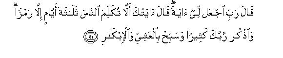
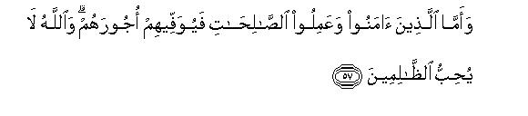
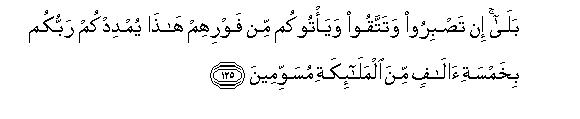

بسم الله الرحمن الرحيم
Sayyid Abul Ala Maududi - Tafhim al-Qur'an - The Meaning of the Qur'an
 3.
Surah Al i Imran (The Family of Imran)
3.
Surah Al i Imran (The Family of Imran)
This Surah takes its name from v. 33. Al-i-Imran, like the names of many other surahs, is merely a name to distinguish it from other surahs and does not imply that the family of Imran has been discussed in it.
This Surah consists of four discourses The first discourses :-
The first discourse (vv. 1-32) was probably revealed soon after the Battle of Badr.
The second discourse (vv. 33-63) was revealed in 9 A. H. on the occasion of the visit of the deputation from the Christians of Najran.
The third discourse (vv. 64-120) appears to have been revealed immediately after the first one.
The fourth discourse (vv. 121-200) was revealed after the Battle of Uhd.
Though these discourses were revealed at different periods and on different occasions, they are so inter-linked and so inter-connected iii regard to their aim, object and central theme that they make together one continuous whole. This Surah has been especially addressed to two groups-the people of the Book (the Jews and the Christians) and the followers of Muhammad (Allah's peace be upon him).
The message has been extended to the Jews and the Christians in continuation of the invitation in Al-Baqarah, in which they have been admonished for their erroneous beliefs and evil morals and advised to accept, as a remedy, the Truth of the Quran. They have been told here that Muhammad (Allah's peace be, upon him) taught the same right way of life that had been preached by their own Prophets; that it alone was the Right Way, the way of Allah; hence any deviation from it will be wrong even according to their own Scriptures.
The second group, the Muslims, who had been declared to be the best Community in Al-Baqarah and appointed torch-bearers of the Truth and entrusted with the responsibility of reforming the world, have been given additional instructions in continuation of those given in the preceding Surah. The Muslims have been warned to learn a lesson from the religious and moral degeneration of the former communities and to refrain from treading in their footsteps. Instructions have also been given about the reformative work they had to perform. Besides this, they have been taught how to deal with the people of the Book and the hypocrites who were putting different kinds of hindrances in the way of Allah. Above all, they have been warned to guard against those weaknesses which had come to the surface in the Battle Uhd.
The following is the background of the Surah:
The Believers had met with all sorts of trials and hardships about which they had been forewarned in Al-Baqarah. Though they had come out victorious in the Battle of Badr, they were not out of danger yet. Their victory had aroused the enmity of all those powers in Arabia which were opposed to the Islamic Movement. Signs of threatening storms had begun to appear on all sides and the Muslims were in a perpetual state of fear and anxiety. It looked as if the whole Arabian world around the tiny state of Al-Madinah - which was no more than a village state at that time -- was bent upon blotting out its very existence. This state of war was also adversely affecting its economy, which had already been badly disturbed by the influx of the Muslim refugees from Makkah.
Then there was the disturbing problem of the Jewish clans who lived in the suburbs of Al-Madinah. They were discarding the treaties of alliance they had made with the Holy Prophet after his migration from Makkah. So much so that on the occasion of the Battle of Badr, these people of the Book sympathized with the evil aims of the idolaters, in spite of the fact that their fundamental articles of the Faith - Oneness of Allah, Prophethood, Life-after- death -- were the same as those of the Muslims. After the Battle of Badr, they openly began to incite the Quraish and other Arab clans to wreak their vengeance on the Muslims. Thus those Jewish clans set aside their centuries-old friendly and neighborly relations with the people of Al-Madinah. At last when their mischievous actions and breaches of treaties became unbearable, the Holy Prophet attacked the Bani- Qainu-qa'a, the most mischievous of all the other Jewish clans who had conspired with the hypocrites of Al-Madinah and the idolatrous Arab clans to encircle the Believers on all sides. The magnitude of the peril might be judged from the fact that even the life of the Holy Prophet himself was always in danger. Therefore his Companions slept in their armors during that period and kept watch at night to guard against any sudden attack, and whenever the Holy Prophet happened to be out of sight even for a short while, they would at once set out in search of him.
This incitement by the Jews added fuel to the fire which was burning in the hearts of the Quraish and they began to make preparations to avenge the defeat they had suffered at Bad. A year after this an army of 3,000 strong marched out of Makkah to invade Al-Madinah and a battle took place at the foot of Mount Uhd. The Holy Prophet came out of Al-Madinah with one thousand men to meet the enemy. While they were marching to the battle-field, three hundred hypocrites deserted the army and returned to Al- Madinah, but there still remained a small band of hypocrites among the seven hundred who accompanied the Holy Prophet. They played their part and did their worst to create mischief and chaos in the ranks of the Believers during the Battle. This was the first clear indication of the fact that within the fold of the Muslim Community there was quite a large number of saboteurs who were always ready to conspire with the external enemies to harm their own brethren.
Though the devices of the hypocrites had played a great part in the set-back at Uhd, the weaknesses of the Muslims themselves contributed no less to it. And it was but natural that the Muslims should show signs of moral weakness for they were a new community which had only recently been formed on a new ideology and had not as yet got a thorough moral training. Naturally in this second hard test of their physical and moral strength, some weaknesses came to the surface. That is why a detailed review of the Battle of Uhd was needed to warn the Muslims of their shortcomings and to issue instructions for their reform. It should also be noted that this review of the Battle is quite different from the reviews that are usually made by generals on similar occasions.
This Surah is the sequel to, Al-Baqarah and the invitation therein is continued to the people of the Book. In Al-Baqarah the Jews were pointedly invited to accept the Guidance and in this Surah the Christians have particularly been admonished to give up their erroneous beliefs and accept the Guidance of the Quran. At the same time, the Muslims have been instructed to nourish the virtues that may enable them to carry out their obligations and spread the Divine Guidance.
In these introductory verses, the fundamental truths about Allah, Revelation and Life-after-death have been reiterated to serve as fitting preliminaries, leading to the main topics discussed in the Surah. 1 - 32
This discourse is particularly addressed to the Christians and invites them to accept Islam. It clears Jesus and his mother not only from the stigma maliciously set upon them by the Jews, but also refutes the erroneous Christian creed of the Divinity of Jesus which had been formulated because of his miraculous birth. For this purpose the instances of John the Baptist to a barren woman and an extremely aged man and that of Adam without father and mother have been cited to show that there is nothing in the birth of Jesus without a father to entitle him to Divinity. 33 - 65
In these verses the people of the Book, the Jews, have been invited to give up their sinister ways and accept the divine Guidance. At the same time the Muslims have been warned to be on their guard against their malicious intentions, erroneous ways and absurd objections. 66 - 101
The Muslims have been instructed to learn lessons from the history of the people of the Book and also to guard themselves against their machinations, and to prepare and train themselves to establish virtue and eradicate evil. 102 - 120
In this portion, a review of the Battle of Uhd has been mad to teach and reassure the Muslims that the machinations of their enemies could do them no harm, if they would practice restraint and fortitude and have fear of Allah. It has been pointed out that the set-back they had suffered was due to the lack of some moral qualities and the existence of some evils. Since the main cause of the defeat was the greed of the archers, guarding the pass, the taking of interest has been prohibited to eradicate this evil. 121 - 175
The main theme of the verses 109 - 120 has been resumed to reassure and encourage the Muslims against the dangerous plots of their enemies. 175 - 189
This is the conclusion of the Surah and is not directly connected with the verses immediately preceding it but with the theme of the Surah as a whole. 190 - 200

In the name of Allah, the Compassionate, the Merciful.
[1-2] Alif. Lam. Mim. Allah! He is the Ever-living, the Sustainer of the Universe. In reality there is no god but He.1
[3-4] He has sent down to you the Book, which has brought the Truth and confirms the Scriptures which preceded it. Before this, He sent down the Torah and the Gospel for the guidance of mankind,2 and He has sent down the Criterion (of right and wrong). Now there shall be a severe punishment for those who reject the Commandments of Allah: for Allah is Almighty, Avenger of wickedness.
[5-9] Nothing in the Earth or in the heavens is hidden from Allah.3 It is He Who shapes you in the wombs of your mothers as He wills.4 There is no deity but He, the Al-Mighty, the All-Wise. It is He Who has sent down this Book to you. There are two kinds of verses in this Book: muhkamat (which are precise in meaning: ) they are the essence of the Books5 and the other kind is mutashabihat (which are ambiguous. ) Those, who are perverse of heart, always go after the mutashabihat in pursuit of mischief and try to interpret them arbitrarily, whereas in fact, none save Allah knows their real meanings!6 In contrast to them, those, who possess sound knowledge, say, "We believe in them because all of them are from our Lord."7 And the fact is that only the people of insight can learn lessons from such things. They pray to Allah, "Our Lord, let not our hearts become perverse after 'Thou hast once guided us aright, bestow upon us mercy from Thyself for Thou art the real Benefactor! Lord! Thou wilt surely gather all mankind together on a Day which is inevitable, for Thou never failest to fulfil Thy promise."
[10-13] As for those, who have adopted the attitude of disbelief,8 neither their riches nor their children shall avail them against Allah: they shall become fuel for Hell. Their end shall be the same as that of the people of Pharaoh and other disbelievers who went before them; they treated the Divine Revelations as falsehoods and Allah seized them because of their sins; for Allah is very stern in retribution. Therefore, O Muhammad, say to those who have rejected your Message, "The time is approaching fast when you shall be overpowered and driven to Hell: and Hell is a horrible abode. You have already had a Sign in the two hosts which met on the battle-field (at Badr). One of these hosts was fighting for the cause of Allah and the other was of the disbelievers: the lookers-on saw with their own eyes that the host of the disbelievers,9 was twice as big as that of the believers, but (the result of the Battle proved conclusively that) Allah strengthens with His succour whom He wills: there is truly a great lesson hidden in it for those who have eyes to discern."10
[14-17] Love of lusts for women and children. hoarded Heaps of gold and silver, choicest horses, cattle and corn fields, has been made very tempting for people, but these are mere provisions for the transitory life of this world; the ever-lasting and the best abode, however, is with Allah. Say, "Should I tell you a thing better than these? There will be Gardens underneath which canals flow for those, who adopt the attitude of piety; there they will dwell for ever and will have pure spouses11 and they will enjoy Allah's favour. And Allah watches very closely the conduct of His servants."12 These are the people, who say, "Lord, we have believed sincerely; forgive us our sins and save us from the fire of Hell." They show fortitude,13 are truthful, obedient and charitable, and implore Allah's forgiveness in the early hours of the morning.
[18] Allah Himself has testified to the fact that there is no deity save Him:14 the angels and all those endowed with knowledge testify the fact with truth and justice 15 that there is no deity save the All-Mighty the All-Wise.
[19-20] Indeed, Islam is the only right way of life in the sight of Allah.16 Those who were given the Book, had adopted ways different from this Way for no other reason than to enable themselves to behave unjustly towards one another, after knowledge .had come to them;17 they should know that Allah is very prompt at reckoning with those who deny and reject His Commandments and Guidance. Now, if they dispute with you, tell them, "As for me and my followers, we have surrendered to Allah." Then ask those, who possess the Book and those who do not, "Have you also surrendered to Him"?18 If they have surrendered, they are rightly guided. But if they turn away (you need not worry), for your sole responsibility was to convey the Message. As to the consequence, Allah Himself watches closely what His servants do.
[21-22] Give the good tidings of a painful chastisement19 to those who reject Allah's .Revelations and slay His Prophets unjustly and are deadly against those who rise up from among the people to enjoin right and justice. They are the ones whose works have come to naught in this world and in the Next,20 and they have no helpers.21

[23-25] Have you not marked the behaviour of those who have received a share of the knowledge of the Book? When they are invited to the Book of Allah so that it may judge between them, some of them evade it and turn away from Its judgement.22 They do this because they say, "The fire of Hell is not going to touch us and even if it does at all, it will be only for a few days."23 Such self invented beliefs have involved them in various kinds of misunderstandings about their religion. But what will they do when We will gather them together on the Day which is sure to come? On that day, everyone will be paid in full for what one has earned, and none shall be wronged.
[26-27] Say, "O Allah, Sovereign of the Kingdom, Thou bestowest kingdom on whomever Thou wilt and Thou takest it away from whomever Thou wilt. Thou exaltest whomever Thou wilt and Thou abasest whomever Thou wilt. All that is good is in Thy power: indeed Thou hast full power over all things. Thou causest the night to pass into the day and Thou causest the day to pass into the night; Thou bringest forth the living out of the dead and Thou bringest forth the dead out of the living and Thou givest sustenance to whom Thou wilt without stint."24
[28] Let not the Believers make the disbelievers their friends and take them into their confidence in preference to the Believers. Whoever will do this shall have no relation left with Allah; however your show of friendship towards them will be pardonable, if you do so to guard against their tyranny.25 Anyhow Allah warns you to fear Him because to Him you shall return.26
[29-30] O Prophet, warn the people to note it well that Allah knows whatever is in your hearts whether you hide it or reveal it, for He knows everything that is in the heavens and in the earth and He has full power over all things. That Day is approaching when everyone shall find before him whatever he has done be it good or evil. On that Day one would wish that there were a long span of time between himself and that Day. Allah warns you to fear Him for He is very Compassionate towards His servants.27
[31-32] O Prophet, tell the people, "If you sincerely love Allah follow me; then will Allah love you and forgive your sins, for He is Forgiving and Merciful. " Also say to them, "Obey Allah and His Messenger." And if, in spite of this, they do not accept your invitation, (warn them that) Allah does not love those who refuse to obey Him and His Messenger.28
[33-37] Allah29 had chosen (for His Message) Adam, and Noah and the family of Abraham and the family of Imran30 in preference to all the people of the world. They all belonged to the same chain and were the offspring of one another. Allah knows everything and hears everything.31 (He was hearing,) when the woman of `Imran32 was saying,. "My Lord, 1 vow to Thee what is in my womb for Thy special service: so accept this offering of mine for Thou hearest and knowest everything."33 Afterwards when she delivered her child, she said, "Lord, I have delivered a girl" --- and Allah knew very well what she had delivered --- "and the male is not (handicapped) like the female.34 As it is, I have named her Mary, and I implore Thy protection for her and for her future offspring from the mischief of Satan, the Accursed." So, her Lord very graciously accepted the girl and made her grow up as a good girl and entrusted her to the care of Zacharias.
[38-39] Whenever Zacharias35 entered the sanctuary36 to see her, he found some eatables with her; he would ask, "O Mary, whence have these come to you?" She would answer, "It is from Allah: Allah provides without stint for whom He wills." Thereupon Zacharias invoked his Lord and said, "Lord, bestow upon me from Thyself righteous offspring for Thou alone hearest prayers."37 As he stood praying in the sanctuary, the angels called him and said, "Allah gives you the good news of a son to be named John;38 he will come to confirm a Command from Allah;39 he will be a great leader: he will be highly disciplined: he will be appointed a Prophet, and will be among the righteous."

[40-41] Zacharias said, "Lord, how shall I beget a son now that I have grown very old and my wife is barren?" "Thus will it be,”40 was the answer. "Allah does whatever He wills." He said, "Lord, give me a Sign."41 "Your Sign is that you shall not (be able to) speak to anyone for three days but by gestures. During this period you should remember your Lord much and glorify His Name in the morning and in the evening."42
[42-43] Then came the time when the angels said: “O Mary! Behold, Allah has chosen you, and made you pure, and exalted you above all the women in the world. O Mary! Remain devout to your Lord, and prostrate yourself in worship, and bow with those who bow (before Him)”
[44] O Muhammad, these are the "unseen" things, We are revealing to you: you were not present there when the priests of the Temple were casting lots by throwing their quills to decide which of them should be the guardian of Mary:43 nor were you with them when they were arguing about it.
[45-49] And remember when the angels said, "O Mary, Allah sends you the good news of a Command of His: his name shall be Messiah, Jesus son of Mary. He will be highly honoured in this world and in the Next World and he will be among those favoured by Allah. He will speak to the people alike when in the cradle and when grown up, and he will be among the righteous." Hearing this, Mary said, "How, O Lord, shall I have a son, when no man has ever touched me?" "Thus shall it be,"44 was the answer. Allah creates whatever He wills. When He decrees a thing, He only says, "Be" and it is. (Continuing their message, the angels added,) "And Allah will teach him the Book and wisdom, and give him the knowledge of the Torah and the Gospel, and appoint him as His Messenger to the children of Israel."
[50-51] (And when he came as a Messenger to the children of Israel, he said,) "I have come to you with a clear Sign from your Lord: in your very presence, I make the likeness of a bird out of clay and breathe into it and it becomes, by Allah's Command, a bird. I heal those born blind and the lepers and I bring to life the dead by Allah's Command: I inform you of what you eat and what you store up in your houses. Surely there is a great Sign for you in all this, if you have a mind to believe. 45 And I have come to confirm those teachings of the Guidance of the Torah which are intact in my time.46 Lo! I have come with a clear Sign from your Lord;47 so fear Allah and obey me. Indeed Allah is my Lord, and also your Lord; therefore worship Him alone: that is the straight way."48
[52-53] When Jesus perceived that the children of Israel were bent upon disbelief, he said, "Who will be my helper in the cause of Allah?" The disciples49 (promptly responded and) said, "We are Allah's helpers:50 we have believed in Allah; so do bear witness that we are Muslims (who surrender to Allah). Lord! we have believed in that which Thou hast sent down and followed Thy Messenger; so enroll us among those who bear witness.

[54-57] Then the children of Israel began to plot (against Jesus) and Allah also devised His secret plan, and Allah is the best of devisers. (It was to carry out His secret plan that) He said, "O Jesus, now I will recall51 you and raise you up to Myself and cleanse you of (the uncongenial company and the filthy environment of ) those who have rejected you and will set up those who follow you above those who have rejected you52 till the Day of Resurrection. And ultimately all of you shall return to Me: then I will judge between you in what you differ, and punish with a grievous punishment, both in this world and in the Hereafter, those who have adopted the attitude of disbelief and rejection and they shall have none to help them. And those, who have believed and done good deeds, shall be given their rewards in full. And note it well that Allah does not like the transgressors."

[58-60] The stories which We are relating to you are full of signs and wisdom. In the sight of Allah, the case of the birth of Jesus is like that of Adam, whom He created out of dust and said, "Be", and he was.53 This is the fact of the matter your lord is imparting, and you should not be of those who doubt it.54
[61-63] After the coming of this knowledge to you, if anyone argues with you about this matter, say, O Muhammad, "Come, let us both gather together and also bring our children and your children, our women and your women, and then pray to Allah and invoke Him to lay the liars under His curse."55 These narratives are absolutely true and the fact is that there is no deity save Allah; indeed Allah is All Mighty and All-Wise. Then if they turn away (from accepting the challenge) it will be a clear proof of their mischief and Allah has full knowledge of the mischief-makers.
[64] Say,56 "O people of the Book! Come to what is common between us and you,57 that we worship none but Allah; that we associate nothing with Him and that none of us shall make as our Lord any other than Allah." If they reject your invitation, then tell them plainly, "Bear witness that we are Muslims (who worship and surrender to Allah alone)."
[65] O people. of the Book, why do you argue with us about Abraham (as to whether he was a Jew or a Christian? You know that) the Torah and the Gospel were sent down long after him. Why do you not, then, understand even this?58 You have had enough arguments

[66-68] You have had enough arguments about things of which you had some knowledge: why should you now argue about that also of which you know nothing at all? Allah knows, but you know nothing. Abraham was neither a Jew nor a Christian, but he was a Muslim, sound in the Faith,59 and he was not of those who set up partners with Allah. Surely only those people who follow Abraham are entitled to claim a relationship with Him. Now this Prophet and the Believers are better entitled to this relationship: Allah is the Protector of only those who are Believers.
[69-71] (O Believers,) a party of the people of the Book longs to lead you astray, somehow or other; whereas they mislead none except themselves, but they do not perceive it. O people of the Book, why do you deny Allah's Signs, which you yourselves are witnessing?60 O people of the Book, why do you confound the Truth with falsehood and conceal the Truth knowingly?
[72-74] Another party of the people of the Book says to one another, "Profess in the morning what has been sent down to the Believers and reject it in the evening: it may be that, by this device, they will turn back from their Faith."61 They also say, "Do not follow any except the one who follows your own religion." O Prophet, say to them, "In fact the real guidance is the guidance of Allah: (It is His Will) that He may bless one with the same that He once bestowed upon you, or He may provide others with a strong argument against you to put it before your Lord." O Prophet, say to them, "Bounty and Grace belong to Allah and He may bestow these upon any one He wills,61a for He is All Embracing,62 All-knowing:63 He chooses for His favour whom He wills and His grace is boundless."
[75-77] There is among the people of the Book such a person who will return to you intact a heap of gold entrusted to him by you. But there is among them also such a one who will not return even a single dinar entrusted to him by you unless you demand it with importunity. They justify their immoral behaviour, saying, "We are not to be called to account for our behaviour towards the unlettered (gentiles)."64 Obviously, this is a falsehood of their own which they deliberately . ascribe to Allah, knowing well that He has never permitted such a thing. Well, will they not be called to account? Nay, Allah loves only such pious people who fulfil their Covenant and abstain from evil. As for those who barter away their Covenant with Allah and their own oaths for a paltry profit; they shall have no share in the Hereafter; Allah will not speak to them nor even look at them nor cleanse them of sins on the Day of Resurrectien.65 There is, on the other hand, a painful punishment in store for them.
[78] There are among them some people, who, in reading the Book, twist their tongues in a way to make you think that what they read is a part of the Book, whereas, in fact it is not a part of the Book.66 They also assert, "What we are reading is from Allah," when in fact it is not from Allah. They knowingly ascribe the lie to Allah.
[79-80] No man, to whom Allah gives the Book and sound judgment and Prophethood, would say thereafter to the people, "Be worshippers of me instead of Allah." He will surely say, "Be true Rabbanis67 in accordance with the teachings of the Book you read and teach. He will never enjoin you to make the angels or the Prophets your lords; is it conceivable that a Prophet should enjoin you to adopt disbelief, after you have surrendered to Allah?"68

[81-82] Remember, Allah made this Covenant with His Messengers: "Now that We have given you the Book and Wisdom, you are hereby bound to believe in and help a Messenger,69 who comes to you afterwards, confirming the teachings you already possess." After this, He asked, "Do you confirm this and take up the heavy responsibility of your Covenant with Me?" They said, "Yes, we confirm." Then Allah said, "Very well, bear witness to this and I also bear witness with you. Now whosoever breaks the Covenant after this, he shall be a transgressor."70
[83-85] Now do these people desire to give up the way of Allah's submission (Islam) and adopt a different way (knowing well), that all things in heavens and the earth, willingly or unwillingly, submit to Allah,71 and to Him shall all return? O Prophet, say, "We believe in Allah and in the teachings which have been sent down to us, and also in those teachings sent down to Abraham, Ismail, Isaac, Jacob and his descendants, and in the guidance that was given by Allah to Moses, Jesus and other Messengers. We do not discriminate against anyone of them72 and we submit and surrender to Him." And whoso adopts any other than this way of submission (Islam), that way shall not be accepted from him and in the Hereafter he shall be among the losers.
[86-87] How can it be that Allah would guide the people who adopted disbelief after they had acknowledged the Faith and after they themselves had borne witness that he was a true Prophet and after clear Signs had come to them?73 For Allah does not guide the unjust people. The fitting recompense for their iniquity is that they are under the curse of Allah and of the angels and of all mankind.
[88-91] They shall remain under it for ever; neither will their punishment be lightened nor shall they be reprieved. However, those who repent after this and mend their ways will be redeemed; Allah is Forgiving and Compassionate. As for those who believed and then disbelieved and persisted in their disbelief;74 even their repentance shall not be accepted because they are obdurate transgressors. Believe it that if anyone of those who adopted disbelief and died as a disbeliever were to fill the whole earth with gold and offer it as ransom for redemption, that will not be accepted. There is a painful punishment in store for such people and they will not find any helpers.
[92] You can never attain piety unless you spend (in the way of Allah) of what you love;75 surely Allah will have full knowledge of what you spend.
[93-95] All these articles of food (which are lawful in the Muhammadan Law), were also lawful to the children of Israel76 except those which Israel77 had forbidden for himself before the Torah had been sent down. Say to them, "Bring the Torah and read out any passage from it (in support of your objection), if what you say be true. "-If even after this, some people persist in attributing to Allah false things of their own fabrication, they are, indeed, unjust people. Say, "What Allah has said is the very Truth; so follow exclusively the way of Abraham, and Abraham was not of those who associated other gods with Allah."78

[96-97] Undoubtedly the first house of worship ever to be built for mankind is the one which is at Makkah: it was blessed and made the centre of Guidance for all peoples.79 In it are clear Signs:80 there is the spot where Abraham used to worship: then it is the sanctuary, and whoso enters it becomes safe and secure.81 Allah has, therefore, a right on the people that the one, who can afford to reach the house, should perform Haj there: and the one who disobeys (this Commandment should know that) Allah is All-Sufficient and does not stand in need of any creature of the worlds.
[98-99] Say, "O people of the Book, why do you disbelieve in the Revelations of Allah? Surely Allah is watching what you are doing"Say, "O people of Book, why do you stand in the way of him who believes in the Revelations of Allah and desire that he should follow a crooked way when you yourselves are a witness to it (that he is on the Right Way)?" Allah is not unaware of what you are doing.
[100-101] O Believers, if you follow some of the people of the Book they will again turn you away from belief into unbelief. There is no reason why you should now turn to unbelief, when Allah's Revelations are being recited to you and His Messenger is among you; whoso holds fast to Allah, surely he will be guided to the Right Way.
[102-103] O Believers, fear Allah as He should be feared and see that you do not die save as true Muslims82 - Hold fast together to Allah's cord83 and Iet nothing divide you. Remember the favour of Allah upon you, when you were enemies to one another, then He united your hearts, and by His grace, you became like brothers, and you were on the brink of the abyss of Fire and He rescued you from it.84 Thus does Allah make His signs clear to you so that you may find the right path to true success by these.85
[104-109] There should always be among you some people who invite to what is good and enjoin what is right and forbid what is wrong: They alone will attain true success. And do not be like those, who became divided into sects and got involved in differences of opinion even after receiving clear teachings.86 Those (who have caused divisions), shall suffer a terrible punishment on the Day, when the faces (of some) will be brightened with joy and those of others shall be blackened with gloom. (It will be said to those,) whose faces shall be blackened, "Did you adopt the way of disbelief after receiving Faith? Well, then taste the torment for showing gross ingratitude towards it." As regards those, whose faces will be brightened, they will enjoy Allah's mercy and abide therein for ever. These are Allah's Revelations, which We are reciting to you in all Truth, for Allah does not will to be unjust87 to the people of the world. All that is in the heavens and the earth belongs to Allah, and to Allah are all the matters presented.

[110-112] Now you are the best community which has been raised up for the guidance of mankind:88 you enjoin what is right and forbid what is wrong and believe in Allah. Had these people of the Book89 also believed, it would have surely been better for them. Though there are among them some believers, yet most of them are transgressors. Anyhow they can do no harm to you: the worst they can do is to inflict a trifling hurt on you. If they fight with you, they will turn their backs on you, and shall not get any help from anywhere. Disgrace and humiliation have been stamped upon them wherever they may be except in the case when they get refuge under the favour of Allah or under the patronage of other people.90 They have incurred the wrath of Allah; therefore misery and humiliation have been stamped upon them. This is because they rejected the Revelations of Allah and killed His Prophets without any just cause; this is the consequence of their disobedience and their transgression.

[113-117] Yet all the people of the Book are not alike: there are among them some who are steadfastly on the right path; who recite the Revelations of Allah at night and fall prostrate before Him; who believe in AIlah and the Last Day; who enjoin what is right and forbid what is wrong and remain earnestly engaged in good works; these are the righteous people, and whatever good they do, they will not be denied the just reward for it, for Allah knows full well the pious people. As for those who have adopted the way of disbelief, neither their wealth nor their children shall avail them against Allah; they deserve Hell, and there they shall abide for ever. Whatever they are spending in this worldly life may be likened to the wind that brings frost in it and smites and destroys totally the tillage of those who have been unjust to themselves;91 Allah has not done any injustice to them but in fact they themselves are doing injustice to themselves.
[118-120] O Believers, do not take into your confidence any other than the people of your own community for they never miss any opportunity of exploiting any weakness of yours92 They desire that which is harmful to you; their malice has become apparent from what they say, but what they conceal in their hearts is yet far worse. We have made clear to you the signs thereof, and if you are wise, (you will be very cautious in your relations with them.) As for you, you love them but they do not love you, even though you believe in all the revealed Books.93 When they meet you, they say, "We also believe (in. your Prophet and in your Book"), but when they go aside, they bite their finger-tips in their rage against you.- Say to them, "Perish in your rage: Allah knows even that which is hidden in the hearts." They grieve if you are blessed with some good and rejoice if an evil befalls you. But their crafty schemes cannot harm you at all, if you show fortitude and fear Allah in whatever you do. Allah encircles whatever they are doing.
[121] O Messenger,94 mention that occasion to the Muslims when you set out from your house-hold early in the morning and began to assign to the Muslims their positions on the battlefield (of Uhd). Allah hears everything and knows everything.
[122-123] Remember that two groups from among you were about to show cowardice,95 though Allah was there to succour them, and the Believers should trust in Allah alone. Indeed Allah had already succoured you in the battle of Badr when you were in a much weaker position, therefore you should refrain from showing ingratitude towards Allah: it is expected that you will be grateful now.

[124-127] Remember when you said to the Believers, "Does it not suffice you that Allah should help you by sending down three thousand angels?"96 -Yes, if you show fortitude and fear Allah in whatever you do, Allah will help you with (not three thousand but) five thousand angels, known by certain marks, in case of a sudden attack from the enemy. Allah has told you this so that you may rejoice and your hearts be filled with peace: victory and succour come from Allah alone, Who is All-Powerful, All-Wise. (He will succour you) so that He may cut off a flank of the disbelievers or put them to rout with dishonour.
[128-129] (O Prophet,) you have no authority to decide the affair: Allah alone has the authority to pardon them or punish them for they are workers of iniquity. Allah is the Owner of whatever is in the heavens and whatever is in the earth: He may forgive whomever He pleases and punish whomever He wills; Allah is Forgiving and Merciful.97
[130-136] O Believers, give up the devouring of interest by doubling and redoubling it,98 and fear Allah: it is expected that you will achieve (true) success. And guard yourselves against that Fire which has been prepared for the disbelievers, and obey Allah and His Messenger; it is expected that you will be shown mercy. Hasten to follow the path that leads to forgiveness from your Lord and to the Garden, which is as vast as the heavens and the earth and has been prepared for those pious people who spend their wealth freely in the way of Allah alike in prosperity and in adversity; who control their rage and forgive other people,-Allah likes such good people very much,99 -who, if ever they commit a base deed or wrong their own soul by the commission of a sin, remember Allah instantly and ask for forgiveness from Him for their shortcomings-for who, but Allah, can forgive sins?-who do not knowingly persist in the wrongs they did. These will be rewarded with forgiveness from Allah and with Gardens beneath which canals flow and they will reside therein for ever: and how excellent is the reward of those who do good deeds.
[137-138] As for those who treated (the Divine Revelations) as false, traverse the land and see for yourselves the wretched end of such people, who lived during the eras before your time. This is a clear warning for the people and guidance and admonition for those who fear Allah.
[139-143] Be not faint hearted and be not sorrowful, you will surely gain the upper hand, if you be true believers. If you have received a blow now, your enemy also received a similar blow.100 These are the vicissitudes of time that We alternate among the people; this has been done so that Allah may test from among you who were believers and choose the righteous witnesses of the Truth;101 for Allah does not like the workers of iniquity-and by this test He willed to sort out true believers and to crush down the disbelievers. Do you think that you will enter Paradise without undergoing any trial? Allah has not yet tried you to see who among you are ready to lay down your lives in His way and who will show fortitude for His sake. You used to long for death but that was before you confronted it. Well, now it has come before you, and you have seen it with your own eyes.102
[144] Muhammad is no more than a Messenger: other Messengers have already passed before him: if, then, he also dies or is slain, will you then turn about on your heels?103 Remember, he, who turns about on his heels, will do no harm at all to Allah; of course Allah will duly reward those who live as His grateful servants.
[145-148] No human being can ever die save by Allah's leave, and the time of death has been pre-ordained.104 Whoso makes efforts with the intention of the reward of this world, We will reward him in this world, and whoso makes efforts with the intention of the reward of the Hereafter will get it105 and We will certainly reward the grateful servants.106 Before this have passed many such Prophets in whose company large bands of worshippers of Allah have fought (in His way); they never lost heart during the adversities that befell them in the way of Allah; nor did they show any weakness; nor did they submit (to falsehood:107 ) Allah likes the people who show fortitude. Their only prayer was: "Our Lord, forgive our errors and shortcomings; pardon us the excesses we have committed in our affairs; make our footings secure and hold us firm against the disbelievers. " Whereupon Allah gave them the rewards of this world and also the better rewards of the Next World: Allah likes only those people who do good deeds.
[149] O Believers, if you follow the counsel of those who have adopted the way of disbelief, they will cause you to turn back to unbelief108 and you will be the losers.
[150-151] (What they are saying is quite wrong) the fact is that Allah is your Protector and Helper and He is the best of all Helpers. The time is coming when We will cast awe into the hearts of the rejecters of the Truth: this is because they have set up with Allah partners, for whom He has sent no authority. Hell shall be their final abode and wretched indeed is the dwelling place of the workers of iniquity.
[152] Allah did fulfil His promise (of help) to you: in the initial stage of the battle, it was you who were killing them by Allah's leave until you lost heart and disputed about your duty and disobeyed your leader, when Allah showed you what (the spoils) you coveted,108a-for there were among you some who hankered after the life of this world, and others, who cherished the Life-after-death. Then Allah caused your retreat before the disbelievers in order to test you, but the fact is that even then Allah pardoned109 you, for Allah is very gracious to the believers.
[153] Recall how you were fleeing in such a panic that you did not even look back at one another, and the Messenger in your rear was calling nut to you.110 Consequently, Allah inflicted upon you one sorrow after the other111 so that you may learn this lesson for the that you should not grieve for what you have lost and for any misfortune that might befall you: Allah is fully aware of all that you are doing.
[154] Then after this grief, Allah sent down upon some of you such a sense of peace and security that they began to drowse,112 but the others, who attached importance only to their own worldly interests, began to cherish about Allah thoughts of ignorance which were void of truth. Now they ask, "Have we also a say in .the conduct of affairs?" Say, ("No one has share in this.) The authority over the affairs rests wholly with Allah." In fact they are not disclosing to you what they are concealing in their hearts: what they really mean is this: "If we had a say (in the conduct of) the affairs, none of us would have been slain here." Tell them, "Even though you had remained in your houses, those, who were destined to be slain, would have gone forth of their own accord to the places where they were destined to be slain." And all this happened so that Allah may test that which was hidden in your hearts, and sort out the base thing from your hearts. Allah is fully aware of what is in the hearts.
[155] As for those of you who turned their backs on the day the two hosts met, they failed in their duty because Satan had exploited some of their weaknesses and made their footing insecure. Nevertheless Allah pardoned them, for Allah is indeed Forgiving and Forbearing.
[156-158] O Believers, do not behave like disbelievers: when their brethren are on a journey or take part in a battle, (and ever meet with some accident) they say, "Had they stayed with us, they would not have died nor would have been slain." Allah makes such things113 a cause of grief and anguish in their hearts: for in fact, it is Allah who ordains both life and death; Allah is watching all that you do. If you are slain or die in the way of Allah, you will get Allah's forgiveness and mercy which are far better than all the things they amass. Anyhow, you shall be gathered together before Allah whether you die or are slain.
[159-160] (O Messenger,) it is a great mercy of Allah that you are very gentle and lenient towards them: for, had you been harsh and hard hearted, they all would have broken away from you: so pardon them and implore Allah to forgive them, and take counsel with them in the conduct of the affairs; then, when once you make up your mind (to do a thing), trust in Allah (and do it). Allah likes those who trust in Him in whatever they do. If Allah helps you, no power can overcome you, and if He forsakes you, who is there, then, after Him to help you? Therefore, true believers should trust in Allah alone.
[161-164] It is not conceivable that a Prophet should ever commit breach of trust,114 for whoso breaks His trust shall bring forth with him on the Day of Resurrection that which he had misappropriated. Then everyone shall be recompensed in full for what one earned, and none shall be dealt with unjustly. How can then it be conceivable that the one, who always follows Allah's will, should behave like the one who incurs Allah's wrath and is ultimately doomed to Hell, which is the mast abominable abode? These two types of people have, in the sight of Allah, ranks of far different grades, for Allah is watching what they are doing. As a matter of fact, it is the great favour of Allah to the Believers that He has raised up in their midst from among themselves a Messenger who recites to them His Revelations, purifies their lives and teaches them the Book and Wisdom, though before this these very people had been in manifest error.

[165-168] And how is it that, when a disaster befell you, you exclaimed, "Whence is this?115 You yourselves had (in the battle of Badr) inflicted twice as great a disaster (on your enemy).116 O Prophet, say to them, "You yourselves have brought about this disaster upon yourselves."117 Allah has, indeed, power over everything.118 It was by Allah's leave that you suffered the loss on the day the two armies met so that Allah might test the true believers and also the hypocrites. When these hypocrites were told to come and fight in the way of Allah or at least in the defence (of their city), they said, "Had we known that the fighting would take place today, we would have certainly gone out with you."119 At the time they were uttering these words, they were nearer to unbelief than to faith, for they utter with their tongues what is not in their hearts; but Allah knows well what they conceal in their hearts. These are the very people who, while they themselves stayed at home, said of their brethren, who had gone to the battle and had been slain, "If they had obeyed us, they would not have been slain." Tell them, "If you really believe in what you say, you should turn away your own death, when it comes to you."

[169-171] Do not regard as dead those who have been slain in the way of Allah; nay, they are really alive120 and are well provided for by their Lord. They rejoice in what Allah with His bounty has given them,121 and they are happy to think that there is nothing to fear or to grieve also for those believers whom they have left behind and who have not yet Joined them. They feel happy to have received the reward and the bounty of Allah and they have come to know that most surely Allah does not let go to waste the reward of the Believers.
[172-175] As for those, who responded to the call of Allah and His Messenger even after receiving the injury122 there will be a great reward for such of those who do righteous works and refrain from evil and who,123 when the people said to them, "Big armies have gathered against you: so fear them," became more firm in their Faith, and answered, "Allah is all sufficient for us, for He is the best Protector." Ultimately they returned home with the blessing and grace of Allah; they did not suffer any harm at all. Besides this, they had the, honour of following what pleased Allah, and Allah's bounty is infinite. (Now you must have realized that) it was Satan who was frightening the people with the fear of his friends; therefore in future do not fear men but fear Me, if you are true believers.124
[176-178] (O Messenger,) let not the mischievous activities of those, who are striving today in the way of unbelief, grieve you; they can do absolutely no harm to Allah: thus Allah intends that they should not have any share in the Hereafter, and there is a very severe punishment in store for them. Those, who are bartering away faith for unbelief, are surely doing no harm to Allah: a grievous torment awaits them. Let not the disbelievers think that the respite We are giving them is good for themselves; as a matter of fact, We are giving them respite so that they might gather a heavy burden of sins for themselves; then there shall be disgraceful punishment for them.

[179] Allah will not leave the Believers in the state in which you happened to be at present:125 He will surely separate the pure from the impure people but Allah will not do this by disclosing the unseen to you.126 As for disclosing the unseen, He chooses those of His Messengers He pleases; therefore put your faith in Allah and His Messenger (regarding the unseen) for there shall be a big reward for you, if you follow the way of faith in Allah and fear Him.
[180] Let not those whom Allah has blessed with His bounty and are behaving in a niggardly manner think it to be good for themselves; nay, it is very bad for them. Whatever they are hoarding parsimoniously shall be hung round their necks like a collar on the Day of Resurrection; for Allah alone will inherit all that is in the heaven and the earth127 and He is fully aware of what you are doing.
[181-182] Allah has heard the saying of those who said; "Allah is poor and we are rich."128 We will record this (in their Conduct Book) along with their previous record of unjust killing of their Prophets. And (on the Day of Judgment), We will say to them, "Now taste the torment of the burning Fire. This is for what you earned with your own hands. Allah is not unjust to His servants."
[183-185] There are those who say "Allah has enjoined us that we should not accept anyone as a Messenger unless he offers, in our presence, a sacrifice which fire from heaven should devour." Say to them, "Many Messengers came to you before me with clear Signs, and they brought also the Sign you speak of: if you are sincere (in your demand), why did you kill those Messengers?"129 If they now charge you with imposture, O Muhammad, before you they treated as impostors many a Messenger who came with clear Signs, and with Scriptures and light-giving Books. Since every being shall taste death, all of you shall get your full recompense on the Day of Resurrection. Then only that one will be truly successful, who escapes from the Hell-fire and is admitted to the Garden. As regards the life of this world, it is (as it appears); merely a thing that deceives.130
[186-189] O Muslims, you shall surely be tried in your possessions and in your selves; you shall hear many hurtful things from those who were given the Book before you and from those who associate other gods with Allah. But if you show fortitude, and fear Allah under all circumstances,131 this will be (a proof of) constancy of purpose. Remind the people of the Book that Allah made the Covenant with them and enjoined: "You shall spread the teachings of the Book among the peoples and shall not keep these concealed."132 But they flung the Book behind their backs and' bartered it away for paltry worldly gains. What a bad business they are carrying on! Do not think that those, who exult in their misdeeds and who love to be praised even for deeds they have not actually performed,133 shall escape chastisement; the fact is that a grievous chastisement awaits them; for to Allah belong the earth and the heavens and He has power over each and everything.

[190-194] In134 the creation of the heavens and the earth, and in the alternation of night and day, there are many signs for the people of good sense, who standing and sitting and lying down remember Allah and reflect upon the (wonders) of the structure of the earth and the heavens.135 (Then they cry out spontaneously,) "Our Lord, Thou, hast not created all this in vain, 'for Thou art free from doing such a thing. So save us from the torment of the Hell-fire136 for, O Lord, surely Thou wilt have abased him, whom Thou wilt cast into Hell-fire; then such workers of iniquity shall have no helper. O Lord, we heard a caller, who invited to the Faith, saying, "Believe in your Lord," and we accepted his invitation;137 so, our Lord, forgive us our sins and remit our evil deeds and let our end be with the righteous people. Lord, fulfil the promises Thou hast made to us through Thy Messengers and do not put us to shame on the Day of Resurrection, for Thou never goest against Thy promise."138
[195] Their Lord answered their prayer, saying, "I do not let go to waste the labour of any worker from among you whether male or female, for all of you (human beings) are the offspring of one another.139 I will, therefore, forgive all the shortcomings of those who left their homes or were expelled from them for My sake or were persecuted, and of those who fought for My cause and were slain, and admit them to the Gardens underneath which canals flow." This is their reward from Allah and with Allah alone is the richest reward.140

[196-199] Let not the activities of the disbelievers in the countries deceive you, for this is merely a brief enjoyment of this transitory life; then all of them shall go to Hell which is the worst abode. On the other hand, pious people, who fear Allah, will be given Gardens underneath which canals flow: therein they will live for ever. This is their hospitality from Allah, and that, which is with Allah is the best for the righteous people. And there are some even among the people of the Book, who believe in Allah and in the Book which has been sent down to you and in the Scripture which was sent down to themselves before this; they humble themselves before Allah and do not barter away Allah's Revelation for paltry worldly gains; they will have their reward from their Lord; for Allah is very swift in settling accounts.
[200] O Believers, Practice fortitude and show valour in fighting against worshippers of falsehood;141 be ever prepared for the service of Truth, and always fear Allah: it is expected that you, will achieve true success.
1Please see E.N. 278, Al-Baqarah.
2There exists a common misconception about the Torah (Taurat) and the Gospel (Injil) for the people generally take the Pentateuch (the first five books of the Old Testament) for the Torah, and the Gospels (the first four books of the New Testament) for the Injil. The misconception creates doubts about Revelation itself and a question arises, "Are these books really the Word of God? And does the Holy Qur'an really confirm all their contents"? As a matter of fact, the Torah, which the Qur'an confirms, is not the Pentateuch but is contained in it, and the Injil is not "the four Gospels" but is widen these books.
The Taurat consists of those commandments and injunctions which were given to Prophet Moses (Allah's peace be upon him) during his Prophethood, which lasted for about forty years. Of these were the Ten commandments which were inscribed on stone tablets and delivered to Moses on Mount Tur: as regards the remaining Commandments and injunctions he himself had put down in writing. Then he handed one copy of the Torah to each of the twelve tribes of Israel for guidance. One copy was entrusted to the Levites for safe custody, which along with the stone tablets, was deposited in the Ark.
That Taurat remained quite sate and sound as an entire book up to the first destruction of Jerusalem. But, by and by, the Israelites grew so indifferent to and negligent and unmindful of it that when the Temple of Solomon was under repair during the reign of Joshiah, Hilkiah. the high Priest came across it by chance but did not know that it was the Torah; he thought it was only a Law book and passed it on to the Royal Scribe as a curio. The latter presented it to king Joshiah who tore his clothes and ordered Hilkiah and others to consult the Eternal about the terms of the book. (2 Kings, 22: 8-13). Such was the condition of the Israelites when Nebuchadnezzar sacked Jerusalem and destroyed the Temple, and they lost for ever even the very few copies of the Torah which had long lain neglected in some forgotten niches.
The Old Testament was compiled by Ezra, when the Israelites returned home to Jerusalem after their captivity in Babylon and built the Temple anew. Ezra gathered together some prominent men of his community, and with their help compiled the whole history of Israel which now comprises the first 17 books of the Bible. Of these Exodus, Leviticus, Numbers and Deuteronorny tell the life history of Prophet Moses and include those verses of the real Taurat which became available to Ezra and his assistants, who incorporated them in those books at appropriate places in the chronological order of their revelation. Thus it is obvious that the Pentateuch as a whole is not the Taurat but includes it. The real Taurat comprises those verses which are scattered all over the life story of Prophet Moses, and it is not difficult even today to locate and recognize them. Such portions where the author says, "God said to Moses," or Moses said, The Lord your God says," the Taurat begins, and where the narrative of the life story is resumed, there that part of the Taurat ends. At those places the author of the Bible has inserted certain things by way of explanation or commentary, and it is here that the ordinary reader fails to distinguish the real Taurat from the commentary. However, those who have an insight into the nature of Divine Scriptures, can distinguish, to some degree of exactness, the explanatory. notes from the revealed verses.
According to the Qur'an, only such scattered portions in the Pentateuch are the Taurat and it confirms them alone. And this can be testified by putting together these verses and comparing them with the Qur'an. Here and there one might come across a minor difference in their details, but one cannot find even the slightest difference between the fundamental teachings of the two. Even today one can see clearly that both the Scriptures have come from the same source.
Likewise, the Injil is the name of those inspired discourses and sayings which Jesus (Allah's peace be upon him) uttered as a prophet during the last couple of years of his life. We have no means now of ascertaining whether these pious utterances were recorded and compiled during the lifetime of Jesus. In the introduction to his translation of the Bible, Moffat says, "Jesus wrote nothing and for a time his immediate disciples felt no impulse to write any account of him. The data of the historical Jesus, therefore is based on the vivid recollections and traditions of the primitive Palestinian disciples. How soon their materials took written shape we cannot tell, but at least one written record of them was probably in existence by about A.D.50." Anyhow, when, long after his recall, the stories of Jesus were compiled in the shape of tour Gospels, (the period of the composition of Mark, the tirst to be composed was 65-75 A.D.), some of his written or inspired sayings were also inserted at appropriate places in the historical sketches. Thus it is obvious that the first tour Gospels are not the Injil, the discourses and sayings of Jesus, but they contain it. We have no means of recognizing thetas from the works of the authors except this: Wherever the authors say "Jesus said so or taught so and so," there the Injil begins and where they resume the narration, there it ends. According to the Qur'an, only such portions are the Injil and these alone are condensed by it. If these portions are compiled together and compared with the Qur'an, one will tied no serious difference between the two, and, if somewhere a trivial difference appears, it can be removed very easily with unbiased thinking.
3That is, "He has full, perfect and exact knowledge of the whole universe. Hence the Book revealed by Him will contain nothing but the Truth. As a matter of fact, one can learn pure Truth from that Book alone which has been sent down by the All-Knowing and All-Wise."
4This implies two important things here:
(1) Allah knows your nature better than yourself or anybody else: therefore, there is no other alternative for you but to trust in the Guidance sent down by Him.
(2) The Benevolent Allah Who has been providing for all your needs, great and small, throughout all the stages of your life, ever since your mothers conceived you, could not possibly have neglected to provide for your guidance, which is after all the greatest need of your life.
5"Muhkam" is that which is precise, exact, clear and decisive. Muhkamat are those verses of the Qur'an which have been so couched as to make their meaning quite plain without any shade of ambiguity. They have been purposely so worded as to make their meaning definite and precise leaving little room for misinterpretation. These verses constitute the fundamental principles of the Book, i. e.. they and they alone determine the aim and object for which the Qur'an has been sent down. They invite the world to Islam, teach morals and give warnings. They refute wrong beliefs and practices, and lay down the way of right living. They expound the fundamentals of religion and state beliefs and practices, morals and duties, commandments and prohibitions. Therefore a seeker after Truth should turn to these verses as these alone can satisfy his needs. Naturally such a person will concentrate on these verses and endeavour to derive the greatest benefit from them.
6Mutashabihat are those verses in which there is a possibility of more than one meaning. Their object is to give a certain minimum knowledge about the universe, its beginning and end, the position of man therein, and such other basic things, for these things are essential for the formulation of any system of life. It is obvious that no human language possesses words, expressions, idioms etc., to depict clearly those supernatural things, which have never yet been grasped by human senses, nor seen nor heard nor smelt nor touched nor tasted by human beings. That is why such supernatural things have to be described in terms of human life. That is why the Qur'an uses ambiguous verses in human language which are liable to give rise to more than one meaning. Thus it is clear that the main benefit of such verses is that they help one approach the Reality and form a conception of it. Hence the more one tries to determine their precise meanings, the more one gets involved in doubts and ambiguities. As a result of this, one will not be able to find the Reality but will be led further away from it and cause mischief. Therefore those, who seek after the Truth and do not hanker after superfluities, rest content with the simple idea of Reality they get from the ambiguous verses, which suffices thetas for an understanding of the Qur'an; they concentrate their whole attention on a fuller comprehension of the verses which are precise in meaning. On the other hand, those who love superfluities or seek after mischief, spend their tune and energies in giving arbitrary interpretations to the ambiguous verses.
7This might give rise to a question: how can one believe in the truth of the ambiguous verses, if one does not know their precise meaning? The answer is that a study of the precise verses, and not of the different interpretations of the ambiguous verses, confirms a sensible man in his belief that the Qur'an is the Word of Allah. When the study of the precise verses once convinces him that the Book is really from Allah, then the ambiguous verses do not create any doubt in his mind and he accepts the simple meanings which are within his comprehension and leaves alone any complicacies if and when they appear. Instead of hair splitting and probing into them, he believes in the Word of Allah as a whole and turns his attention to more useful things.
8Please see E.N. 161, AI-Baqarah.
9Although the actual ratio was three to one, yet even a casual observer could not have failed to notice that the number of the unbelievers was at least twice as great as that of the Muslims.
10A brief review of the Battle of Badr, which had recently taken place, is being made with a view to imparting lessons by snaking a reference to its events and its results. This Battle taught three important lessons:
It taught that even on the battlefield the Believers, who tight in the way of Allah, behave in quite a different manner from the disbelievers. The latter, like the Quraish, indulge in merry making and enjoying wine, women, music, dance etc., while the former, like the Muslims, practise piety, and fear Allah and absorb themselves in prayer.
(2) The victory of the Muslims, in spite of their smaller number and less equipment, over the disbelievers who had a larger number and better weapons was a clear proof that they had Allah's succour with them.
(3) The defeat was a shocking lesson for the disbelievers, who were neglectful of Allah's power and proud of their equipment and the large number of their helpers. By this, Allah taught that He can bestow power on a small number of poor migrants from Makkah arid the farmers of Al-Madinah, to inflict crushing defeat on the Quraish, the most influential and powerful clan of Arabia.
11Please see E.N. 27, Al-Baqarah.
12That is, "Allah dces not shower His favours erroneously nor whimsically nor dces He make cursory and superficial decisions. He is fully aware of the actions, deeds and intentions of His servants, and evaluates them correctly and knows full well who should deserve His favour and who should incur His displeasure."
13It means, "They stand steadfast for the sake of truth, are not daunted by losses or hardships, are not disheartened by failures, and are not turned aside from the right path by temptations. They stick to the Truth even when there appears to be no chance of success." (Please see E.N. 60, Al-Baqarah also.)
14That is: This' is the testimony of Allah Himself that He alone in the whole universe possesses the attributes of God-head and the authority and the rights of God-head. This is His testimony, and who could be a more reliable Testifier than He Who has direct knowledge of all the realities of the universe? He sees His whole c: eation spread before Him, and from Him nothing is hidden in the heavens or in the earth.
15Next to Allah, the most trustworthy witnesses are angels, who are the managing agents of the affairs of His Kingdom of the Universe. Their evidence is based on their personal knowledge, that is,
"None but Allah wields command in this kingdom and none but He gives orders for the administration of the affairs of the earth and the heavens." Then all those people, who have been bestowed with the knowledge of the realities, have been unanimously bearing witness, since the beginning of the world to the present day. that Allah alone is the Master and the Designer of the whole universe.
16It implies that in the sight of Allah there is only one correct system and one right way of life for man. It is this: Man should worship Allah, acknowledge Him as his Master and surrender himself completely to Him in His worship and service. He should not invent his own way of worship but should faithfully follow that Guidance alone which Allah has revealed through His Messengers, without adding anything to or taking away anything from it. This way of thinking and behaving is called "Islam." And it is the absolute right of the Creator and the Master of the Universe that He should not accept as lawful from His subjects, His own creation, any way other than Islam. One might ignorantly think it to be one's right to follow any system, atheism, idolatry, etc., but the Ruler of the Universe will regard this behaviour as rebellious.
17It means that originally Islam and Islam alone was professed and preached by every Messenger who was sent by Allah at any time in any comer of the world. Hence any Scripture sent down to any community in any language taught the same Islam. Afterwards, the people distorted this original religion and added to it something to suit their interests or to gratify their lusts, and omitted those things from it which went against their interests. They invented new religions just because they wanted to transgress the prescribed limits and run after undue privileges and gains and distinctions. Thus they made changes in the beliefs, principles and injunctions of the true Faith to make it subservient to their own desires and lusts.
18The same thing may be expressed thus: "My followers and I have been convinced of this same pure Islam and have accepted the true religion of Allah; now tell us whether you also will give up the innovations which you and your elders have introduced into it and turn to the original true religion."
19This is an ironical way of bringing home to the disbelievers the consequences of those mischievous deeds in which they rejoice today, regarding them as "nice things."
20That is, "As they have spent all their energies and powers in evil ways, their works will bring them to ruin both in this world and in the Next World"
21That is, "There is no such power which can bring out good results from their wrongly directed efforts or at least make them harmless. All the various agencies, which they believe will help them in this world or in the Next World or in both, shall be absolutely of no avail to them anywhere."
22That is, "They are asked to acknowledge the Book of Allah as the final authority and bow before its decrees and accept as true whatever is proved to he true by it, and reject whatever is proved to be false by it. "It should be noted that here by the Book of God is meant the Torah or the Gospel and by "the people who have received a share of the knowledge of the Book" are meant the learned people of the Jews and the Christians.
23As such people regard themselves to be the favourites of God, they delude themselves that they are going to enter into Paradise anyhow, irrespective of the quality of their deeds. They foolishly believe that the fire of Hell dare not touch them because they are "true" believers and the children of such pious ancestors, and the followers of such and such prophets and the disciples of such and such saints, etc., etc. And if at all they are cast into Hell, they argue, they will be kept there only for a few days and that, too, to be cleansed of the impurity of sins and then will go into Paradise permanently. Such misleading ideas and conceptions have made them so bold that they commit the gravest crimes and the most heinous sins fearlessly: so much so that they openly disown the Truth without the least fear of Allah.
24Verses 26 and 27 fit in beautifully between the preceding and the subsequent verses. From verse 19 begins a warning and challenge to the opponents of Islam, and in verse 25, the Muslims have been consoled with the assurance that their enemies shall be paid in full on the Day of Judgment. But in order to reassure them, Allah has in these verses, answered an unasked question which arises when one sees that the disbelievers and the disobedient to Allah are prospering in the world, while the believers and the obedient servants of Allah are starving and suffering from hardships. The question is: What wisdom underlies this disparity in the prosperity and adversity of the two groups? At the time (A.H. 3) of the revelation of this discourse the Holy Prophet and his Companions were so hard pressed on all sides that the same question was arising in the people's minds. Its answer is contained in these verses: Allah to Whom belongs all authority, power, wealth, prosperity etc., etc., gives a portion of these to whomsoever He wills, and they should not feel uneasy and anxious about this disparity because He is All Wise and All-Knowing. Moreover Allah gives wealth to whomsoever He wills; therefore it is not to be made the criterion of honour and friendship. Hence in the subsequent verses, the Muslims have been prohibited from making the prosperous disbelievers their friends.
25That is, "If a believer falls into the hands of the enemies of Islam and is afraid of maltreatment and high-handedness, he may conceal his Faith, and live among them as if he were one of them. Or, if they come to know of his Faith, he may make a show of his friendship towards them to save his life. In case of extreme fear, he is permitted even to disown his Faith, if he feels that he is not strong enough to endure their oppression."
26This is the admonition: Let not the fear of the people dominate over you so much as to drive out the fear of Allah from your hearts. The greatest harm the people can do to you is confined to the worldly life only, but Allah has the power to inflict an everlasting torment on you. Therefore, if you are forced in a case of extremity to hide your Faith due to any danger to your life, you may save your own life and property, provided that you do not in any way harm the interests of the Islamic mission and the Islamic community or the life or property of any Muslim. At the same time you must remain on your guard against becoming the instrument in the hands of disbelievers so as to strengthen the evil forces against Islam and render any service to the disbelievers that might enable them to overpower the Muslims. Remember that, if to save your life you do any kind of harm to the religion of Allah or to the community of the faithful or even to the person of a single believer, or if you render any real service to the rebels against Allah, you will never be able to save yourselves on the Day of Reckoning, when you shall have at last to return to Allah
27That is, "It is simply out of His extreme compassion for you that Allah warns you beforehand of those things that might lead you to ruin."
28Here the first discourse ends. If We consider its theme, and especially its reference to the Battle of Badr, we come to the conclusion that the probable period of the revelation of this was some time after the Battle of Badr and before the Battle of Uhd, that is 3 A.H. A tradition of Muhammad bin Ishaq has generally misled people to fix the period of the revelation of the first 80 verses to 9 A.H., for according to that tradition it was sent down on the occasion of the deputation from Najran. But obviously, that is wrong for two reasons: first, the subject of this introductory discourse shows clearly that it was revealed much earlier. Second, the tradition of Mugatil-bin-Sulaiman is explicit on the point that on the occasion of the said deputation only those verses (33-63) were revealed which give an account of John the Baptist and Jesus (God's pe ace be upon them).
29From here begins the second discourse. It was sent down in 9 A.H. on the occasion of the visit of the deputation from the Christian State of Najran, which lay between Hijaz and Yemen. It is said that it comprised 73 villages and towns and was capable of raising an army of more than one hundred thousand strong. The population was wholly Christian and was governed by the "Aqib," who was the head of the community, and the "Sayyid," who was in charge of the social and political affairs and the Bishop, who looked after the religious affairs of the people. The above-mentioned deputation was one of the many who visited the Holy Prophet after the conquest of Makkah, when the whole of Arabia came to realize that the future. of the country was now in his hands. This deputation from Najran to AI-Madinah consisted of 60 men and the three heads of the government. As they had no mind to go to war, the question before them was either to embrace Islam or to live as zimmi (proteges). On this occasion Allah sent down this discourse to the Holy Prophet to invite the members of the deputation to Islam.
30`Imran was the name of the father of Moses and Aaron and has been mentioned as "Amram" in the Bible.
31The main cause of the misguidance of the Christians is that they consider Jesus to be the son of God and a partner in God-head, instead of His Servant and Messenger. Therefore this basic error is being corrected with a view to making them understand the true and real Islam. That is why the introduction to the discourse begins with the assertion that Adam and Noah and the Prophets from the family of Abraham and from the family of `Imran, were all human beings and none of them was "God. " Their only distinction was that Allah had chosen them for the preaching of His religion and reforming the World.
32If by the "woman of `Imran" is meant the "wife of `Imran", then this must be a different 'Imran from the one mentioned above in v. 33. In that case one comes to the conclusion that the father of Mary was named 'Imran after that ancestor. But if by the "woman of `Imran" is meant a woman from the family of 'Imran, then it merely shows that Mary's mother was a descendant of `Imran. We possess no authentic knowledge of the basis on which one opinion may be preferred to the other. Though according to some Christian traditions the name of Mary's father was Iaachim, history does not say who the father of Mary was and to which family her mother belonged. But if the tradition that the mothers of Mary and Elisabeth, the mother of John, were cousins be taken as we, (Luke 1: 36), then the "woman of `Imran" will mean a woman from the family of `Imran. The Gospel of Luke (1:5) says that Elisabeth, the wife of Zacharias. "was of the daughters of Aaron", that is, 'Imran daughter or woman of `Imran; therefore it is clear that there is no anachronism of confounding Miriam, the sister of Aaron, with the virgin Mary. It is a common practice to call children by the names of their ancestors; so both the explanations are equally acceptable. Moreover, it does not make any difference whatsoever, in the line of argument adopted here to explain the miraculous birth of Jesus, whether 'Imran was really the name of Mary's father or has been called so in the ancestral sense.
33That is, "Thou hearest the prayers of Thy servants and art aware of their intentions."
34By this she meant, "Had it been a male, it would have been better because the female is handicapped by many natural frailties and social restrictions and cannot become a priest. A male child would, therefore, have served the purpose better for which I have dedicated my child in Thy way."
35This happened when Mary had reached the age of discretion and had been admitted into the sanctuary of the Temple (Jerusalem), where she was busy, day and night, in the worship of Allah. Zacharias who had been made her guardian was probably the husband of her maternal aunt and was one of the keepers of the Temple. He was not the Prophet Zachariah, who was killed according to the Old Testament.
36The Arabic word "mihrab"usually reminds one of the arch (prayer niche) meant for the imam in the mosques. But here this word has been used for those cells which are built on comparatively raised ground adjoining the monasteries and churches. They are meant for the keepers and guardians of the places of worship, and for those who retire for worship in seclusion. In such a Cell Mary had retired for worship in seclusion.
37Zacharias was childless till that time. Seeing this pious young girl, he longed for a good child. Seeing how she was growing under the special protection of Allah, Who supplied her in her seclusion, with provisions from His vast sources, he began to cherish the hope that Allah should bestow upon him a child even in his old age, if He so willed.
38The Bible mentions him as John the Baptist. (Matthew: Chaps. 3, 11,14; Mark 1, 6; Luke 1, 3).
39"Command from Allah" here refers to Jesus Christ. The Holy Qur'an calls him a "Command from Allah" because the birth was brought about miraculously by an extraordinary Command from Allah.
40That is, "Despite your old age and the sterility of your wife, Allah will bestow upon you a son."
41That is, "Give me a token to assure me beforehand of the birth of a son to an old man and a barren woman."
42The main object of this discourse is to make the Christians realize the error of their belief in taking Jesus for the son of God, and making him an object of worship. The extraordinary birth of John has been mentioned in the Qur'an to serve as .introduction to the subsequent argument against their wrong belief. The miraculous birth of Jesus could no more entitle him to Divinity than the extraordinary birth of John, brought about in the same family in a different and unusual way could entitle the latter to Divinity.
43As Mary was a girl who had been dedicated by her mother to the Temple in the way of Allah, the question of her guardianship had become a problem for the keepers because of her sex. They were therefore casting lots to decide the delicate problem.
44That is, "Although no man has touched you, yet a son shall be born to you." It should be noted that the same word "kazalika, "meaning "so shall it be," had been used in response to Zacharias' prayer. It, therefore, carries the same sense here. Moreover, the whole context here corroborates the story that Mary was given the glad tidings of the birth of a son without any sexual intercourse, and the birth of Christ, in actual fact, took place in that unusual way. If a son was to be born to her in the normal known way, and if the event of the birth of Jesus had taker. place in a natural way, then the whole discourse starting from verse 33 and ending with verse 63 would become absolutely pointless. Not only that but all other references to the unusual birth of Jesus in the Qur'an would lose their significance and meaning. The Christians had made Jesus the Son of God and worthy of worship simply because of his unusual birth without a father and the Jews had accused Mary because they had witnessed that she had given birth to a child, though she was not married. Had it been otherwise, then the two groups could have been told plainly that the girl was married to such and such a man and that Jesus was from his seed. In that case, one fails to see the reason why such a long introduction and a series of arguments should have been necessary to remove all doubts about his miraculous birth. Then Jesus could have been called the son of a particular man, instead of being called "the son of Mary". The position of those people who, on the one hand, profess to believe the Holy Qur'an to be the Word of Allah and on the other hand try to prove that Jesus was born after the natural coming together of a husband and wife, really try to show that Allah is not able to express Himself as clearly as these people. (May God protect us from blasphemy!)
45That is, "These Signs are clear enough to convince you that I have been sent by that Allah Who is the Creator and Absolute Ruler of this universe, provided that you are not obdurate but are willing to accept the Truth."
46That is, "This is yet another proof of the fact that I have been sent by Allah. If I had been a false prophet I would have invented my own religion and by virtue of these miracles striven to divert you from your previous Faith to the New creed. But I profess the same original religion to be true and confirm the same teachings which were brought by the Prophets before me."
The fact that Jesus taught the same religion that had been presented by Moses and the other Prophets is supported even by the existing Gospels. For example, according to the Gospel of Matthew, Jesus declared in the Sermon on the Mount: "Think not that I am come to destroy the law, or the Prophets: I am not come to destroy, but to fulfil." (5: 17).
One of the Pharisees, who was a lawyer, asked Jesus, "Which is the great commandment in the law?" He replied:
"Thou shalt love the Lord thy God with all thy heart, and with all thy soul, and with all thy mind. This is the first and the great commandment. And the second is like. unto it, Thou shalt love thy neighbour as thyself. On these two commandments hang all the law and Prophets." (Matthew 22: 37-40). On another occasion Jesus said to his disciples:
"The scribes and the Pharisees sit in Moses' seat: All therefore whatsoever they bid you observe, that observe and do; but do not ye after their works: for they say, and do not." (Matthew 23: 2-3).
47That is, "I have come to efface and abolish the superstitions of your ignorant people, the hairsplitting of your jurists, the religious austerities of your ascetics and the restrictive additions made in the Law of Allah under the non-Muslim domination; I will make lawful or unlawful for you only those things which Allah has made lawful or unlawful."
48This shows that like all other Prophets, Jesus also based his teachings on the following three fundamentals:
(1) The Supreme Authority to which mankind should submit and surrender exclusively belongs to Allah and all the social and moral systems should be built entirely on it.
(2) Being a representative of the same Pararmount Power, a prophet must be obeyed unconditionally.
(3) Allah alone is entitled to prescribe laws and regulations for making things lawful or unlawful, pure and impure; consequently all laws imposed by others must be abolished.
Thus it is clear that Jesus, Moses, Muhammad and all other Prophets (Allah's peace be upon them all) had one and the same mission. Those people who aver that different Prophets were sent with different missions and to fulfil different aims, are gravely mistaken. Anyone, who is delegated by the Absolute Master of the Universe to His subjects, cannot have any other mission than to prevent the people, from becoming disobedient to and independent of Him, and to forbid them to set others to rank with Allah as partners in His Authority in any way. For, they are sent to invite the people to surrender and submit and be loyal to the Almighty God and worship Him alone.
It is a pity that the existing Gospels do not present the mission of Jesus so precisely and clearly as it has been presented above in the Holy Qur'an. Nevertheless all the three basic things mentioned above are found scattered over in these Books. For instance, the fact that Jesus believed exclusively in the worship of Allah is clear from the following:
(1) "Thou shalt worship the Lord thy God, and Him only shalt thou serve." (Matthew 4: 10).
(2) Not only did he believe in this, but also made it the ultimate aim of all his activities and strove to make the people of the earth to submit to the revealed Law of Allah just as the whole universe submits to His physical Law.
"Thy kingdom come. Thy will be done in earth, as it is in heaven." (Matthew 6 :10).
Then the fact that Jesus always presented himself as a prophet and as a representative of the Kingdom of Heaven, and always invited the people to follow him in that capacity alone, is supported by a number of his sayings. When he started his mission in his native place, Nazareth, the people of his own town and his own kinsfolk rose against him and according to an agreed tradition of Matthew, Mark and Luke, he said: "No prophet is accepted in his own country". And when his enemies were conspiring at Jerusalem to kill him and the people advised him to go to somewhere else, he replied: "It cannot be that a prophet perish out of Jerusalem." (Luke 13: 33).
When he was entering Jerusalem for the last time, his disciples began to utter in a loud voice: "Blessed be the King that cometh in the name of the Lord." At this the Pharisees felt offended and asked him to silence his disciples. He replied:
"I tell you that, if these should hold their peace, the stones would inunediately cry out." (Luke 19: 38-40).
On another occasion he said: "Come unto me, all ye that labour and are heavy laden, and I will give you rest. Take my yoke upon you and learn of me for I am meek and lowly in heart ..... my yoke is easy, and my burden is light." (Matthew 11: 28-30). Moreover the fact that Jesus wanted the people to obey the Divine Law rather than man-made laws becomes clear from that tradition of Matthew and Mark which says that when the Pharisees asked, why his disciples transgressed the tradition of the elders and took food without washing their hands,. he replied and said, "Well hath Esaias prophesied of you hypocrites, as it is written. This people honoureth me with their lips, but their heart is far from me. Howbeit in vain do they worship me, teaching for doctrines the commandments of men. For laying aside the commandments of God, ye hold the tradition of men, as the washing of pots and cups, and many other such like things ye do. And he said unto them, Full well ye reject the commandment of God, that ye may keep your own tradition. For Moses said, Honour thy father and thy mother; and, Whoso curseth father or mother, iet him die the death: But ye say, If a man shall say to his father or mother, It is Corban, that is to say, a gift, by whatsoever thou mightest he profited by me; he shall be free. And ye suffer him no more to do ought for his father or his mother; Making the word of God of none effect through your tradition, which ye have delivered: and many such like things do ye." (Mark 7: 6-13).
49The Arabic word (havari) is almost the equivalent of "helper". In the Bible, they have been called "disciples" and at some places "apostles" because Jesus used to send them tc the people to deliver his message, and not because God had appointed them as His apostles.
50Those people who help establish Islam have been called Allah's helpers. In order to understand its significance, it should be kept in view that Allah has taken upon Himself to persuade human beings to adopt Islam of their free will, for He does not force His will on man in those spheres of his life in which He has granted him freedom of action but likes to convince him by reason and admonition. As it is the work of Allah to bring the people to the right way by admonition and advice, He calls those people who exert their utmost to establish Islam "His helpers and companions:" This is indeed the highest position that a servant of Allah can aspire to achieve. For man's position is merely that of a servant when he is engaged in praying, fasting and other kinds of worship, but he is elevated to the high and unique position of God's companion and assistant when he is exerting for the establishment of the way of Allah. And this is indeed the loftiest position of spiritual attainment, to which a man can aspire in this world.
51The word (mutawaffi) in the Arabic text is from (tawaffa) which literally means "to take and to receive" and "to seize the soul" is not its lexical but metaphorical meaning. Here it means "to recall from mission." Allah recalled Jesus because the Israelites had rejected him in spite of the clear Signs he had brought. They had been disobeying God for centuries and, in spite of many a warning and admonition served to them, their national character was rapidly deteriorating. They had killed several Prophets, one after the other, and had grown so audacious as to demand the blood of any good man who ventured to invite them to the Right Way. In order to give them the last chance for turning to the Truth, God appointed among them two great Prophets, Jesus and John (God's peace be upon them), at one and the same time. These Prophets came with such clear signs of their appointment from Allah that only such people dared reject them as were utterly perverted and prejudiced against the Truth and were averse to following the Right Way. Nevertheless the Israelites lost their last chance also as they not only rejected their invitation but also had the head of a great Prophet like John cut off openly at the request of a dancing girl. 'And their Pharisees and Jurists conspired and sought to get Jesus punished with the death sentence by the Roman Government. Thus they had proved themselves to be so obdurate that it was useless to give the Israelites any further chance. So Allah recalled His Prophet Jesus and inflicted on them a life of disgrace up to the Day of Resurrection.
It will be useful here to bear in mind the fact that this whole discourse is meant to refute and correct the Christian belief in the God-head of Jesus. Three main things were responsible for the prevalence of this belief among the Christians:
(1) The miraculous birth of Jesus.
(2) His concrete and tangible miracles.
(3) His ascension to heaven about which their Scriptures were explicit.
The Qur'an confirmed the first thing and made it plain that the birth of Jesus without a father was only a manifestation of the infinite powers of Allah. He can create anybody in whatever manner He wills. His miraculous birth, therefore, is no reason why he should be made a god or a partner in Godhead.
The Qur'an also confirms the second thing and even recounts the miracles performed by Jesus, but makes it clear that all those miracles were performed by him, as a servant of Allah, by His leave and not as an independent authority. It is, therefore, wrong to infer that Jesus was a partner in Godhead.
Now let us consider the third thing. If the Christian belief in "Ascension" had been wholly baseless, it could have been refuted by pointing out that the object of their worship, the so-called "Son of God", expired long ago and had become one with dust, and that they could see, for their full satisfaction, his grave at such and such a place. But the Qur'an does not declare this explicitly. On the other hand, it not only uses such words as give at least a vague suggestion of his "Ascension", but also denies that Jesus was crucified at all. According to it the one who gave a loud cry at his last hour, saying, "Eli" Eli, lama sabachthani?" and the one whose picture they carry on the cross, was not Messiah at all, because God had recalled to Himself the real Messiah before the crucifixion took place.
It is thus clear that those people who try to prove the death of Jesus from these verses, really try to show that God is not able to express Himself clearly and unambiguously. (May God protect us from such a blasphemy!)
52"Those who rejected" him were the Jews who were invited by Jesus to accept the Truth.
"Those who follow" him are really the Muslims only but if it may be taken to imply all those who believe in him, then the sincere Christians may also be included.
53That is, "If one's miraculous birth entitles one to become God or the Son of God, then Adam was better entitled to it because he was created without either a human father or a mother, while Jesus was born without a father only.
54The main points in the discourse presented before the Christians up to here are: First, they have been admonished to realize that their belief in the Godhead of Jesus is gravely ill-founded. He was only a man who was born in a miraculous way by the will of Allah and given the power to perform certain miracles as a clear proof of his Prophethood. As regards his "Ascension", Allah had arranged to recall him to Himself before the disbelievers could crucify him. In fact, the Master of the Universe has full powers to treat any of His servants in any special way He pleases. It is, therefore, wrong to infer from the exceptional treatment accorded to Jesus that he himself was the Master or the Master's Son or a partner in the authority of the Master.
Secondly, their attention has been drawn to the fact that Prophet Muhammad (Allah's peace be upon him) invites them to the same Truth that had been preached by Prophet Jesus (God's peace be upon him) in his own time and that the teachings of the two Prophets were basically identical.
Thirdly, the disciples of Jesus believed in and followed the same religion of Islam that is being presented in the Qur'an. However the Christians of the later age discarded the message of Jesus and digressed from the Faith of his disciples.
55This method of settling the dispute was proposed to show conclusively that the members of the deputation of Najran were behaving obdurately. As a matter of fact, they had no answer to the things pointed out in the above discourse and could not bring any authority even from their own Scriptures to justify and support their beliefs under discussion. They could not, therefore, assert with full conviction that their beliefs conformed to the fact and were not false. Besides this, when they observed closely the character and the teachings and the works of the Holy Prophet, the majority of the members of the deputation were so impressed that they became convinced in their hearts of his Prophethood; or at least, they could not reject it boldly. That is why they did not accept the challenge: "If you really believe in the truth of your creed, you should pray with us to Allah and invoke His curse on those who say false things about Christ." The fact that they declined to accept the challenge showed plainly to the whole of Arabia that the religious leaders and priests of the Christians of Najran who were known far and wide for their piety, professed beliefs about which they themselves were not sure.
56From here begins the third discourse. Its subject-matter clearly shows that it was revealed in the period intervening the battles of Badr and Uhd. The contents of the three discourses are so closely interlinked that there is no incoherence anywhere between them. That is why some commentators have been misled to believe that this also formed part of the discourse addressed to the Najran deputation. But the tone of the discourse commencing from here clearly shows that it was addressed to the Jews.
57That is, "Join us in the creed which we have accepted and which you also cannot reject as false, for it is confirmed and supported by the teachings of your own Scriptures
58That is, "Your Judaism and Christianity came into existence long after the revelation of the Torah and the Gospel, whereas Abraham (God's peace be upon him) had passed away long before those Books were sent down. Now, even a man of ordinary common sense can easily understand that the religion of Abraham could in no sense be Judaism or Christianity. Thus, if Abraham was on the right way and had obtained salvation, as you also believe, then it becomes abundantly clear that one need not follow Judaism or Christianity to be on the Right Way and to obtain salvation." (Also see E.N. 135 and 141, Al-Baqarah.)
59The Arabic word (hanif) stands for a person who chooses to follow one particular way after rejecting all other ways. We have conveyed this meaning by "a Muslim, sound in the Faith."
60There may be another rendering of this sentence: "You yourselves testify these." But in neither case is the sense of the passage affected. The fact is that the pious life of the Holy Prophet and the marvelous effects which his precepts and example were producing on the lives of his Companions, and the high and sublime teachings of the Qur'an, were all such clear Signs of God that no one, who was familiar with the lives of the Prophets and with the nature of the heavenly Scriptures, could possibly doubt or deny his Prophethood. Thus, in fact, many a people of the Book (especially the learned among them) had realized that Muhammad (Allah's peace be upon him) was the same Prophet whose coming had been foretold by the former Prophets. So much so, that they were at times completely overpowered by the force of the plain Truth, and would unwittingly admit and confirm that the teachings of the Holy Prophet were true. That is why, the Qur'an accuses them time and again of obduracy and deliberate rejection of the Truth after seeing clear Signs of God and being fully convinced of it in their hearts.
61This was one of those tricks which the leaders and the rabbis of the Jews, living in the suburbs of Al-Madinah used to play in order to weaken the force of the Islamic Movement. They feigned an interest in Islam only to detach some of the Muslims by some subtle arrangements. Their object was to dishearten the Muslims and create doubts among the masses about teachings of the Holy Prophet. For this purpose they began to send people to AI-Madinah to profess Islam openly and then become apostates and proclaim everywhere that they had come out of Islam because they had witnessed such and such evils among the Muslims and their Prophet.
61aThey were stirred to play this wicked game by their envy of Islam and bias in favour of the religion of their fore-fathers. They have been rebuked, as if to say, "God is not bound by your prejudices, but He bestows His Guidance on anyone He wills, and He has by His grace blessed the Muslims with the same Guidance that was once bestowed upon you. You must understand it well that your wily tricks will not succeed in snatching away that Guidance from them nor in changing it into misguidance but only in providing a strong argument against you before your Lord." By this, Allah willed to see whether they would give up their prejudice and accept the Guidance which had been given to another (Muhammad) or whether they would persist in their envy and reject it and provide the Muslims with a strong argument against themselves before their Lord that they rejected the Truth merely because of their prejudice and obduracy.
62The Arabic word "wase" (All-embracing) generally occurs on three occasions in the Qur'an:
(1)When a community of people is warned of their narrow-mindedness and told that Allah is not narrow-minded like them;
(2) When one is rebuked for miserliness and stinginess and is told that Allah is generous and not miserly like him:
(3) When people believe Allah to be finite because of the limitations of their own imagination, they are told that Allah is Infinite and Limitless. (Also see E.N. 116, Al-Baqarah.)
63That is, "Allah knows full well Who deserves honour and excellence."
64That is, "They were required to be fair only in their dealings with the Jews, and there was no harm in usurping the property of a non-Jew." This belief was not confined to the ignorant Jewish masses, but their whole religious system was so moulded as to allow differentiation between Israelites and non-Israelites in their dealings. Their moral code disallowed a certain treatment towards the Israelites but allowed the same towards a non-Israelite; one and the same thing was right for an Israelite but the same thing was wrong for a non-Israelite. For instance, the Bible says: "At the end of every seven years...every creditor that lendeth ought unto his neighbour shall release it...", but "Of a foreigner thou mayest exact it again." (Deut. 15: 1-3). At another place the law about usury has been laid down like this: "Unto a stranger thou mayest lend upon usury; but unto thy brother thou shalt not lend upon usury." (Deut. 23: 20). "If a man be found stealing any of his brethren of the children of Israel, and maketh merchandise of him, or selleth him; then that thief shall die." (Deut. 24: 7).
65Although they were guilty of the blackest sins, yet they had taken it for granted that they would rise as the favourites of God on the Day of Resurrection and they alone would receive His blessings and favours, for they would be rescued from the consequences of the sins they committed in this world by the intercession of their saints in the Next World, but the fact is that they will be dealt with on that Day in quite a different manner.
66Taken figuratively the Arabic Text may also imply that they turn away from the right meaning of the Book or twist the words out of Context and pervert the meaning. But the real meaning of the Text is this: while reading the Book, they twist with their tongues certain words or sentences that are against their self interest or self-invented religious beliefs or theories. Thus they change the meanings so as to mislead people into mental errors or false judgments or wrong religious beliefs. It is an irony that some people sometimes treat the Qur'an itself in the same way. For instance, those people who believe in the Holy Prophet to be superhuman twist verse 110 of chapter XVIII with their tongues and read it The first and correct reading means, "Say, (O Prophet), I also am a man like yourselves," while the second reading perverts the meaning thus: "Say, (O prophet), indeed' 1 am not a man like yourselves. "
67Rabbani (rabbi) was the title of a religious functionary who guided the religious affairs of the Jews, established worship and expounded law.
68These two verses are a comprehensive refutation of all the wrong things that different people have ascribed to their Prophets and entered into their Books in order to make an angel or a Prophet a god and an object of worship. Here a fundamental formula has been laid down: anything that teaches the worship of anyone other than Allah and raises a servant of God to the high pedestal of Godhead can never be the teaching of any Messenger of God: therefore the very existence of such a thing in any book should be taken as a clear proof of its being a later insertion by some misguided people. Hence the claim "to be the son of God and equal with God," could never have been made by Jesus himself, but by some misguided followers of his.
69It implies this: "You people of the Book are bound by the Covenant of your own Prophets to believe in and help Muhammad (Allah's peace be upon him) for we entered into a compact with every Prophet to the effect that they (and their followers by implication) must help every Prophet sent by Us for the preaching and the establishment of the way of life for which they had been appointed. Therefore you should not have any prejudice against him, nor consider religion as your own monopoly; you should not oppose the Truth but come under the banner of anyone who raises it for this purpose.
It is interesting to note that according to Palmer (The Koran), "the Talmudic sources confirm that God assembled all past, present, and future Prophets on Mount Sinai and entered into the compact mentioned in the text."
In this connection it should also be clearly understood that this compact was taken from every Prophet before the advent of Hadrat Muhammad (Allah's peace be upon him); therefore every Prophet informed his followers about the Prophet coming after him and told them to follow him. But there is no mention in the Qur'an or in the Traditions that any such compact was taken from the Holy Prophet: nor did he inform his followers about the coming of any Prophet after him and believing in him. On the contrary, he categorically declared that he was the last in the line of Prophets.
70This implies that the people of the Book were breaking their covenant with Allah by rejecting Prophet Muhammad (God's peace be upon him) and opposing his mission; they were disregarding that covenant which their Prophets had made with Allah. Hence they were perverted transgressors who had gone beyond the limits imposed by Allah.
71That is, "When the whole universe and everything in it follow `Islam' and submit to Allah, what other way of life than Islam do these rejectors, who live in the same universe, seek to follow?"
72That is, "We do not have different ways of treatment for different Prophets: we accept each and everyone of them and do not reject any one of them and we treat all of them as truthful Prophets and none as a liar. We are free from prejudice and zeal for ignorance; we bear witness to the fact that each and every servant of Allah, who brought the Truth from Him to any place whatever in the world, was in the right.
73It has been reiterated here that the Jewish scholars, who lived in Arabia at the time of the Holy Prophet, had understood clearly and borne witness to it that he was a true Prophet of God and that his teachings were the same as those of the former Prophets. But in spite of this, they not only rejected but also opposed him because of their centuries-old prejudices, obduracy and antagonism to the Truth.
74"They persisted in their disbelief" : they did not stop at the rejection of the Faith but went on further and further in their opposition and antagonism to it: they did their very worst to hinder people from the way of Allah by creating doubts and suspicions in their minds and by devising secret plans and plots to make the mission a failure.
75It is meant to remove the misconception of the Jews about virtue. Their highest ideal of virtue was to put on that outward appearance which had been enjoined by the traditional and centuries-old heritage of their ancestors. Besides this they measured virtue by the standard of that elaborate legal system which had been evolved by their hair-splitting scholars. But in spite of their outward religiosity, even their `pious' people were narrow-minded, greedy and parsimonious. Moreover they did not hesitate to conceal the Truth or to sell it, and yet the common people took them for virtuous people. This is why they are being told here that they can attain to real virtue not by the mere outward observance of some rituals of their own invention but by loving God and by keeping His will above every worldly thing. As the door of virtue is shut against anyone who loves any worldly thing more than Allah, the one, who is not ready to sacrifice the beloved thing for the sake of God's love, cannot attain to real virtue. The observance of rituals without this spirit of love is like the paint on worm-eaten wood. It is possible that a human being might be deceived by such outward paint, but it is impossible to deceive God by such devices.
76Verse 93 answers an objection. When the Jews could not find fault with the basic teachings of the Qur'an and of the Holy Prophet (Allah's peace be upon him), for there was absolutely no difference between these and the teachings of the previous Prophets, they began to raise legal objections. One of their objections was that the Holy Prophet had made lawful certain things which had been unlawful during the time of the previous Prophets.
77If Israel refers to the children of Israel, then it would mean that before the revelation of the Torah, they themselves had made certain things unlawful because these had been unlawful by custom. But if it refers to Jacob (and that is more probable), then it means that he did not eat certain things because he did not like them or abstained from them on account of some illness, but his children began to believe these to be unlawful. The subsequent verse shows that the law in the Bible which declared the camel and the hare etc., to be unlawful was not in the Torah, but was later on inserted in it by the Jewish scholars. (For details please refer to E. N. 122 of Al-An'am).
78It is meant to bring home to them this lesson: obedience to God alone is the root of the real Faith, which was taught by Abraham, but you have discarded that and associated other gods with Him. Besides this, you have , entangled yourselves in minor legal issues which had been raised by your scholars after you had deviated from the way of Abraham during the centuries of your degradation.
79Their objection was about the change of qiblah to the Ka`abah (Makkah) from the Temple (Jerusalem), which had been the qiblah of the previous Prophets. This objection had already been answered in Al-Baqarah, but as the Jews persisted in their criticism, it has again been answered here. It has been asserted that the Ka`abah was built by Abraham long before the Temple and therefore it had priority of time for being the qiblah. The Bible itself bears testimony to the fact that the Temple was built by Solomon some 450 years after Moses (I Kings, 6: 1) and made qiblah during his reign. (I Kings, 8: 29-30.) On the other hand, all the traditions of Arabia unanimously agree that the Ka`abah was built by Abraham some 900 years before the advent of Moses. The fact that the Ka`abah has priority of time over the Temple is so obvious that none can deny it.
80There are such clear Signs in "the House:" to show that Allah has accepted it and approved it as "His House." Though it has been built in a barren place, Allah has provided the people of the neighbourhood with the best of provisions. Besides this, though there was chaos and disorder in the whole of Arabia for about 2500 years before the advent of Islam, yet there reigned peace and security in the Ka`abah and in its surroundings. Not only this: there was because of it, peace for four months every year in the whole of Arabia. Another Sign was the miraculous destruction of Abrahah and his army, when he attacked Makkah in order to destroy the Ka'abah. At the time of the Revelation of the Qur'an, every Arab knew well even the details of this incident and there wen even those who had actually beheld the occurrence.
81The inviolable sanctity of the Ka`abah was so much respected even in the dark days of ignorance that blood thirsty enemies dared not touch each other in it. In v. 97, the word kafara does not mean that the one, who disobeys this Commandment of Allah and does not perform Haj even if one can afford it, becomes a disbeliever in the technical sense. It means that the person has adopted the attitude of a disbeliever even after his profession of belief in Allah and His Prophet. This is obvious because the Commandment to perform Haj has not been addressed to the disbelievers but to those who profess to be Muslims. A Muslim judge, therefore, will not declare him to be a disbeliever and apostate for this reason, as if he had gone out of the pale of Islam.
"Allah does not stand .... world :" Allah does not stand in need of any help from the people, whether they be believers or dis-believers. It is for their own good if they become sincere believers. On the other hand, those people, who reject the Commandments of Allah by word or deed, will not be considered to be Believers by Allah, even if they professed to be Believers
82That is, "Be loyal and obedient to Allah up to your last breath."
83"Allah's cord" is the way of life prescribed by Him. It is a "cord" because it keeps intact the relations of the Believers with Allah and also binds and unites them into a community. "Hold fast together to Allah's cord" implies that the Muslims should give the greatest importance to Allah's Way, and should make it the centre of all their interests, and exert their utmost to establish it and co-operate with one another for its service. When and if they let loose this cord and deviate from its basic principles, they would inevitably suffer from disunity and would be divided into sections and sub-sections, like the communities of the former Prophets. As a consequence of this, they would mat with disgrace both in this world and in the Next.
84This refers to that horrible state of the Arabs from which they were rescued by Islam. Before Islam, their clans were divided into hostile camps, who went to war for frivolous reasons. Human life had lost its sanctity and people were killed without any pangs of conscience. The fire of enmity would have burnt to ashes all the Arabs, if blessed Islam had not rescued them from it. This blessing had appeared in a tangible form at AI-Madinah at the time of the revelation of these verses. The two clans-Aus and Khazraj-who had been enemies for years and had been involved in bitter feuds and bloody battles, became brethren after they embraced Islam. Not only this: they also showed that spirit of sacrifice for the rehabilitation of the refugees from Makkah that has no parallel in history.
85That is to say, "If you have eyes to see, you can yourselves judge whether your welfare lies in holding fast to Allah's way or in discarding it and reverting to the old ways of ignorance, and whether your well-wishers are Allah and His Messenger or the Jews and the hypocrites and the polytheists who are trying to revert you to your former condition.
86This refers to those communities which received the Guidance and clear teachings from the Messengers of Allah but after some time discarded the basic principles of the Guidance and divided themselves into different sects on the basis of irrelevant and minor side-issues and were involved in useless and meaningless squabbles. They became so engrossed in these things that they totally forgot the mission which Allah had entrusted to them and lost interest even in the basic principles on which, in fact, depends the real success of humanity.
87As Allah, does not will to be unjust to the people of the world, He is showing them Guidance and warning them before-hand of those things of which they shall have ultimately to render an account. Thus, those who follow the crooked ways even after this and do not return to the Right Way are doing injustice to themselves
88This is the same declaration that has been' made in Al-Baqarah (v. 143). The followers of the Holy Prophet are being reminded that they have been appointed to the leadership of the world from which the children of Israel had been deposed on account of their incompetence. The Muslims have been appointed to that office because they possess those moral qualities which are essential for just leadership. These are to establish virtue and to eradicate evil practically and believe that there is no god other than Allah to put into practice the implication of this belief. They should, therefore, understand the responsibilities of the work which had been entrusted to them and avoid the errors into which their predecessors had fallen. (Please refer also to E. N. 123-144 of Al-Baqarah).
89Here the Jews are "The people of the Book. "
90That is, "The little security that they enjoy anywhere in the world has not been won by themselves but has been the result of the help and kindness of others. They have been getting this either from some Muslim states in the name of Allah or from some non-Muslim states for other reasons." And if sometimes they have succeeded in gaining even some political power, they have not accomplished this through their own efforts but have owed it to others.
91In this similitude, "tillage" stands for human life, for one sows in it deeds or misdeeds which one shall have to harvest in the Next World. The "wind" refers to the superficial and hypocritical show of charity that impels the unbelievers to spend their wealth in charity and public works. And "frost" refers to the lack of faith and willingness to obey the Divine Law in its right spirit, which makes void the acts and deeds of one's life. By this similitude, Allah teaches this lesson; just as air is very useful for the growth of crops but it also destroys these if there is frost in it: in the same way charity helps nourish the harvest that is to be reaped in the Next World but it destroys the same, if it is poisoned with unbelief.
It is obvious that Allah is the Master of man as well as of the wealth that he possesses and of the kingdom in which he is acting. Now, if this slave of Allah does not acknowledge the Sovereignty of his Master or unlawfully sets up other objects of worship and does not obey His Law in his exploitation of His wealth and kingdom, he shall be guilty of a crime. Therefore, he will not be entitled to any reward for his charity, but shall be prosecuted for his unlawful exploitation. The charity of such a man maybe likened to the charity of a servant who steals a sum of money from the treasure of his master and spends it as he likes.
92Here Allah warns the Muslims to guard against the hypocritical attitude of the Jews who lived in the suburbs of Al-Madinah. The two clans, Aus and Khazraj, had been on friendly terms with them from very ancient times and kept sincere relations with them even after embracing Islam. In contrast to this, the Jews, who had turned into the enemies of the Holy Prophet and his mission, could not be friendly with anyone who had joined the new Movement. Accordingly, they kept up an outward show of friendship with the Ansar but in their heart of hearts they had become their bitter enemies. They, however, . exploited this outward friendship and tried to sow seeds of dissension and create chaos in the Muslim Community. They also tried to draw out secrets from the Muslims and pass them on to their enemies. That is why Allah has warned the Muslims that they should not take such people into their confidence.
93That is, "It is strange that the Jews, who themselves are guilty of rejecting your Book, whereas you believe in their Book, the Torah, along with your Book, the Qur'an, should have a grievance against you. There is no reason why they should complain against you: on the other hand, you have a cogent grievance against them for their disbelief in your Book."
94From here begins the fourth discourse, which was revealed after the battle of Uhd. It has been beautifully connected with the previous discourse which ended with the admonition that the machinations of their enemies could do them no harm, if they would show restraint, and fear Allah. This discourse is an apt continuation of the same theme, because the setback in the battle of Uhd was due to lack of restraint and lack of fear of Allah.
As a review has been made of all the important events of the battle in order to bring home the lessons, it will be very useful to keep in view their background, because in the discourse only passing references have been made to them without any details.
In the beginning of Shawwal (A.H. 3), the Quraish attacked Al-Madinah with an army of 3,000 men. They not only out-numbered the Muslims but were also much better equipped. Besides this, they were filled with passion to avenge their defeat at Badr. The Holy Prophet and his experienced Companions were of the opinion that they should defend Al-Madinah from within the walls, but some young men, who had not taken part in the battle of Badr, were so imbued with the spirit of martyrdom that they insisted on going out to meet the enemy. At last on their persistence, the Holy Prophet decided to go out to fight. So he led out an army of 1,000 men but at Shaut, `Abdullah bin Ubayy, the ring leader of the hypocrites, deserted him with his 300 men. Naturally this treacherous act produced much confusion in the Muslim army. So much so that two parties, Banu Salmah and Banu Harithah, were so disheartened that they began to waver in their minds and were about to turn back, but were dissuaded from this by those Companions who had remained firm and constant.
Then the Holy Prophet marched to Mount Uhd with the 700 men left with him after the desertion of `Abdullah bin Ubayy. He arrayed his men at the foot of the Mount so that the army of the Quraish was in their front and Mount Uhd at their back. Thus the only vulnerable point was a pass on one side, where he posted 50 archers under the command of `Abdullah bin Jubair, saying, " to let not any enemy come near us and do not leave your posts in any case whatsoever. Even if you see birds peck at our flesh, you should not abandon your posts at all. "
In the initial stage of the battle, the Muslim army had the upper hand and succeeded in creating great confusion in the army of the enemy. But instead, of pursuing this initial success to the final victory, they were so lured by their greed for booty that they began to loot the spoils. When the archers, who were guarding the pass, saw their comrades plundering the fleeing enemy, they also deserted their posts in order to join the looters. In vain did Hadrat `Abdullah bin Jubair remind them of the strict command of the Holy Prophet to dissuade them from this, but only a few of them listened to him. Khalid bin Walid, who was commanding the cavalry of the enemy, made full use of this opportune moment. He rode round the Mount and attacked the Muslims from behind through the pass. Hadrat `Abdullah . bin Jubair did his best to defend it with the few men left with him, but in vain, and Khalid fell upon the Muslims who were engaged in the plunder of spoils. They were so overwhelmed by this sudden attack from behind that they took to their heels in confusion. To add to their misery, the Quraish who were in flight before them also turned back to attack them from the front. This turned the scale of the battle against the Muslims who were put to rout by this unexpected situation. Still there were some brave Muslims who stood firmly in the battle-field. But then a rumour started that the Holy Prophet had been martyred, and his Companions were so stunned by this rumour that even those who were standing firm in the battle-field lost heart and only a dozen or so of the devoted ones were left with him. Thus it was about to turn into an utter rout, when his Companions heard that, though he was wounded, he was alive. Then they again rallied round him and took him to a safe side of the Mount.
In this connection it is very important to note the strange thing that happened: the Quraish did not make full use of this opportunity but marched back to Makkah instead. This is an enigma, for, if they had pursued their success to complete victory, nothing would have checked them, because the Muslims had been so utterly routed that they could not have given them a battle.
95The two groups were Banu Salmah and Banu Harithah who had wavered in their minds at the desertion of `Abdullah bin Ubayy, the hypocrite, and his 300 followers.
96The Holy Prophet heartened the Muslims with this promise when they were disheartened to confront an army of 3,000 men with a small army of 1,000 which was further reduced to 700 men by the desertion of 300 hypocrites.
97These verses were an answer to the curse which the Holy Prophet called on his enemies: when he was wounded in the battle, he involuntarily invoked evil upon his enemies and said, "How can that community prosper which wounds the Prophet?"
98The main cause of the setback at Uhd was the greed for wealth shown by the Muslims. They were so overpowered by the lust for booty, that, instead of pursuing their initial success to victory, they got engaged in looting the spoils. This is why the All-Wise Allah has struck at interest, the root cause of the evils and prohibited it. For it is a common experience that those who lend money on interest become so absorbed in it that day and night they think of nothing but increasing their un-earned profits and this naturally increases their greed for money.
99The devouring of interest had created greed, avarice, parsimony and selfishness in those who took interest; hatred, anger, enmity and jealousy in those who had to pay it, and these moral evils contributed to some extent to the setback in the Battle of Uhd. Therefore Allah has condemned and prohibited interest and prescribed charity as an antidote to it. It is obvious that Paradise has been reserved for those who practise charity and spend money generously, and not for those greedy persons who practise money-lending on interest. (Please refer also to E. N. 320, Al-Baqarah.)
100God is encouraging the Muslims by mentioning the victory in the battle of Badr, saying, "When the disbelievers did not lose heart by the blow at Badr, why should you, the believers, lose heart by the blow at Uhd?"
101The original Arabic text may imply either of the two things: "Allah desired to give some of you the honour of martyrdom. " Or it may mean, "He willed to winnow the Believers from the hypocrites so that the true witnesses of the Truth, who may really be worthy of performing the mission that has been assigned to the Muslim Community, may be distinguished from the false ones."
102This alludes to those who were so desirous of martyrdom that they had persuaded the Holy Prophet against his wish to go out of Al-Madinah to fight with the enemy.
103This is the answer to the mischievous talk of those hypocrites who had accompanied the Muslims in the battle of Uhd. When the rumour spread that the Holy Prophet had been slain, naturally the we Muslims lost heart, but the hypocrites began to say, "Let us go to `Abdullah bin Ubayy and request him to obtain amnesty for us from Abu Sufyan. " Others who were more impudent, went even so far as to say, "If Muhammad (Allah's peace be upon him) had been a true Prophet of Allah, he could not have been slain. Let us now turn to our ancestral Faith." Allah rebukes them as if to say, "Muhammad (Allah's peace be upon him) is a Prophet, and is mortal like other Prophets who came before him: therefore, if your attachment to Islam is because of the person of Muhammad (Allah's peace be upon him), and if it stands on such flimsy ground that with his death you will again return to disbelief, then Allah's religion does not stand in need of you."
This verse was also meant to impress that Muhammad (Allah's peace be upon him) was mortal like all other Prophets. According to a tradition, on the morning when the Prophet died, Abu Bakr came into the mosque at Al-Madinah and found the people all distracted, and `Umar telling them that it was a sin to say that he was dead. Abu Bakr went and ascertained the truth, and coming back into the mosque, cried, "Lo! as for him who worshipped Muhammad, Muhammad (Allah's peace be upon him) is dead, but as for him who worships Allah, Allah is alive and does not die." Then he recited this verse "and it was as if the people had not known till then that such a verse had been revealed."
104This is meant to teach the Muslims that fleeing from fear of death will be of no avail, because none shall die a moment before the time ordained for death by Allah, nor can one live a moment after it. Therefore, what one should care for, is not how to escape from death but how best to spend the time that has been given in this world. The important question is this: Is it to be spent for the sake of this worldly life or for the Life-after-death?
105As the consequences of all actions follow them inevitably, the most important question from the Islamic point of view is whether one's struggle in life is to be directed towards the transitory interests and enjoyments of this world or towards the ever-lasting joys of the Next World. The answer to this will determine one's moral attitude in regard to good and evil.
106"Grateful servants" are those people who appreciate fully the blessings of Allah, which He has bestowed upon them by giving them the correct answer to the question posed in E. N. 105. He has informed them that there is a limitless life beyond the limited life of this world and that the consequences of the actions of this life are not confined to this life alone, but follow inevitably in the Life-after-death. Hence he is really a grateful servant who trusts in God's promise of sure reward of good deeds in the Next World, and then goes on performing those deeds, disregarding whether his deeds flourish in this life or produce the reverse results. On the other hand, those people are ungrateful who are not ready and willing to spend their time or money or energy on anything that is not expected to produce immediate "good" results in this world. They are ungrateful because they do not appreciate the correct knowledge which has been bestowed by God about the consequences which inevitably follow in the everlasting life in the Next World.
107That is, "They did not surrender to the worshippers of falsehood, even though they were less in number and worse off in equipment than their enemies. "
108That is, "They will take you back to the state of un-belief from which you had come out." This warning was timely because after the reverse at Uhd, the hypocrites and the Jews tried to seduce the Muslims from their Faith. Their fallacious reasoning was like this: "Had Muhammad been a Prophet, he would never have suffered a defeat. It is obvious from this that he is an ordinary man who gets victory one day and suffers defeat another day. It is sheer propaganda that Allah had given him any promise of help and success."
108aThis refers to the conduct of the archers. When they were commanded to abstain from taking spoils, they argued with and disobeyed their leader and deserted their positions with the result that the scales of victory were turned against the Muslims.
109That is, "Your desertion was an act which would have resulted in your total destruction, if Allah had not pardoned you. It was God's grace and succour that saved you from its grave consequences, and the Quraish, in spite of their victory, retreated of their own accord without any apparent reason. "
110It was the courage and firmness of the Holy Prophet that saved the situation from utter ruin in the confusion caused by the sudden attack of the enemy who was charging from the front and from the rear. When some of the Muslims were fleeing towards Al-Madinah and the others were climbing up the Uhd, the Holy Prophet stood firm and resolute at his post with a dozen or so of his Companions who had stood the test. He was rallying those who were taking to flight, calling out, "O servants of Allah, come to me."
111Sorrow was caused by the reverse and by the rumour that the Holy Prophet had been martyred and by the loss of their companions and by the misery of their wounded and by the insecurity of their homes and by the fear that the victorious Quraish army, that out-numbered the total population of Al-Madinah, would crush the routed army, enter into .the town and reduce it to ruins.
112This was a favour shown to those Muslims who had remained firm in the battle. They experienced such a strange sense of security that in spite of their sorrow, they began to feel drowsy. Hadrat Abu Talhah, who had taken part in the battle, says that they were so overpowered by drowsiness that even their swords began to fall from their hands.
113These were their vain regrets which were the result of their wrong thinking. The fact is that the decrees of God are inevitable. Such regrets produce only grief and anguish in the hearts of those who do not trust in Allah but in their own plans and designs. However, when their efforts also end in utter failure, they wring their hands, saying, "Oh! had it been thus and thus, the result would have been so and so."
114This is the answer to the suspicion of the archers about the honesty of the Holy Prophet in regard to the division of the spoils. When they saw their companions plunder the enemy, the archers feared that the former would get the whole of the spoil and they would be deprived of it at the time of division; just because they had not taken part in the plunder. That is why they spontaneously deserted their posts. When later on they put forward some lame excuses, these were not accepted. Then the Holy Prophet said, "The real thing is that you had no trust in me. You suspected that I would deal dishonestly with you and would not give you your due share." In this verse Allah has taken them to task for cherishing such wrong ideas about the Holy Prophet, by putting searching questions as if to say, "How is it that you suspected that your interests would not be safe in the hands of the Prophet of Allah? Can you ever expect that the Messenger of Allah would divide unjustly the wealth that is in his trusteeship."
115This verse is meant to remove the confusion caused in the minds of the common Muslims by the reverse at Uhd. Though the intimate Companions close to the Holy Prophet were under no delusion that his mere presence among them was a sure guarantee of success, yet the common Muslims were suffering from this misunderstanding. They thought that the disbelievers could in no way win a victory over them because the Holy Prophet was present among them and the help and succour of Allah was with them. Therefore, when contrary to their expectations, they met with a reverse at Uhd, they began to ask questions like this: why has this misfortune befallen us, who were fighting for the cause of Allah, and that, too, at the hands of the disbelievers, who had come to destroy Islam? Above all, they could not understand this because Allah had promised to help and succour them and the Holy Prophet was himself present in the battlefield. They have been told that they themselves were responsible for the disaster.
116In the battle of Uhd, 70 Muslims were martyred whereas in the battle of Badr, 70 disbelievers were killed and 70 taken as prisoners.
117That is, "It is the result of your own weakness and wrong acts: you did not show patience; you did things which were against piety; you disobeyed the order of your leader; you became victims of greed and you got engaged in disputes among yourselves: still you ask, "Where has this disaster come from?" defeat.
118That is, "Allah is able to give victory and is also able to bring about
119This was the pretext with which `Abdullah bin Ubayy returned to AlMadinah with his 300 men from his way to the battlefield. When the Muslims perceived that he was about to desert the Muslim army, they tried to persuade him to accompany them but he replied, "We are quite certain that there will be no battle today. That is why we are returning home; we would have most surely accompanied you, if we had expected any battle today."
120Please refer to E. N. 155', AI-Baqarah.
121It has been explained by the Holy Prophet in the Tradition cited in Musnad-i Ahmad. "One, who enters the Next World with good deeds, is blessed by Allah with such a cheerful and joyful life that he never wishes to return to this world, but the case of a martyr is different. He dces wish that he should again be sent to this world so that he may again enjoy the pleasure, joy and exultation that he felt at the time of laying down his life in the way of Allah."
122This verse alludes to those devoted servants of Islam who willingly accompanied the Holy Prophet in his pursuit of the Quraish at that critical juncture.
After the Battle of Uhd, the Quraish marched back towards Makkah. When they had covered a good deal of distance from Al-Madinah, they realized that they had not utilised the golden opportunity of crushing the power of Muhammad (Allah's peace be upon him) and they began to regret: what a folly have we committed by losing that excellent chance! Accordingly, they halted and held a council of war. Though they were in favour of returning to Al-Madinah and making a sudden attack, yet they could not muster up courage and continued their march towards Makkah. At the same time, the Holy Prophet surmised an attack from the enemy; so he assembled the Muslims on the next day after the battle of Uhd and said, "Let us go in pursuit of the Quraish." Although that was a very critical situation, yet the believers and the devoted servants of Allah responded to the call and willingly marched with the Holy Prophet to Hamra-ul-Asad, a place at a distance of 8 miles from Al-Madinah.
123VV. 173-175 were sent down a year after the Battle of Uhd, but have been included in this discourse because they deal with the events which are connected with the same.
124This refers to the terrifying rumours which were being spread in Al-Madinah. On the occasion of his return from Uhd, Abu Sufyan had challenged the Muslims to a fight the following year at Badr. But when the time approached, he could not fmd courage on account of the famine that was raging in Makkah. So in order to save face, he tried to shift on to the Muslims the responsibility for the postponement. Accordingly, he sent a special spy to Al-Madinah to terrify them by spreading rumours that the Quraish were making great preparations for war and collecting such a large army as could defeat any army in Arabia. This device of Abu Sufyan succeeded in producing the desired panic. When the Holy Prophet made an appeal to the Muslims to meet the Quraish in combat at Badr, it failed to produce any encouraging response. So much so that the Messenger of Allah had to declare before the gathered assembly, "I will go to the combat all alone, if none else is willing to go." It was then that 1,500 devotees volunteered to accompany him, and he reached Badr with them. From the other side,Abu Sufyan left Makkah with an army of 2,000 men. But after two days' journey, he told his men that it did not appear to suit them to have a fight that year, and that they would come next year for it. Accordingly, he returned to Makkah with his men. The Holy Prophet, however, waited for him at Badr for eight days. During these days, his Companions did profitable business with a trading party. Then he came to know that the disbelievers had gone back to Makkah, and he returned to Al Madinah.
125That is, "Allah does not like to see the Believers remaining mixed up with the hypocrites in one and the same Muslim Community."
126That is, "Allah does not separate the believers from the hypocrites by informing the Muslims that, in their heart of hearts, such and such are hypocrites." He distinguishes true believers from hypocrites by creating such occasions as practically separate the two groups from each other.
127Everything shall ultimately return to God as His inheritance because it really belongs to God. Whatever is in the possession of any of His creatures is a temporary trust. Everyone in every case shall be dis-possessed of the property and wealth that he calls his own during the short life here and that shall ultimately return to God, the real Owner. Therefore the wise one is he who generously spends Allah's property in Allah's way and the foolish one is he who tries to hoard it.
128The Jews uttered these words on the occasion of the revelation of verse 245 of AI-Baqarah, "Who is there among you, who will lend to Allah a goodly loan..." They ridiculed this appeal, saying, "Oh, yes! God has been reduced to poverty, and now He is begging His servants for a loan."
129This was a lie invented and attributed to God by the Jews, for Allah never enjoined such a thing. Though burnt sacrifices have been mentioned in the Bible, these have not been held out as essential signs of true Prophethood. They were merely symbols of the acceptance of sacrifices by God. (Please refer to Judges, 6: 20-21, 13: 19-20, Leviticus, 9: 24, II Chronicles, 7: 1-2).
It is obvious that this demand was merely a pretext for rejecting the Prophethood of Muhammad (Allah's peace be upon him). As a further proof of their insincerity, it may be recalled that these enemies of the Truth did not hesitate to slay even some of their own Prophets who showed to them this same Sign of the burnt sacrifice. The case of Elijah may be cited as an instance: "When Ahab did more to vex the Eternal than all the kings of Israel before him, Elijah went to him and remonstrated that He had ruined Israel by forsaking the Eternal. So Ahab gathered all Israel. Then Elijah told the people to have a couple of bullocks for the test of the burnt sacrifice. Of course, the "Prophets" of Baal failed in the test. Then God's lightning burnt the sacrifice and all Israel witnessed it but even after this they turned against Elijah who had to flee for his life.' (For details please refer to 1 Kings, 18 and 19).
130The life of this world (as it appears) is a thing that deceives because it helps create false impressions which deceive one about me ultimate results of deeds and misdeeds. One may thus be misled to take apparent prosperity or adversity as the criterion of Truth or falsehood. If one is apparently prosperous in this life, it is wrong to conclude that the one is on the right side and high in God's favour. On the other hand, if another is suffering from misfortunes and is a victim of adversity, it does not necessarily mean that the one is on the wrong side and incurs the disfavour of God. For often the results in this world are just the opposite of those which are to be met with in the Next World. The latter are, however, real and therefore deserve one's greatest consideration.
131That is, "You should prove the strength of your high character even in the face of provocation by keeping your temper under control. Endure with patience their taunts, derision, accusations and improper words and false propaganda. Do not get exasperated even in the most trying circumstances so as to say or do false, unjust, uncivilized and immoral things."
132That is, "Remind them of the Covenant that God made with them and of the great mission that was entrusted to them because they had forgotten it, though they did remember the sign of the burnt sacrifices given to some of their Prophets. "
The Covenant referred to in this verse has been mentioned many times in the Bible, especially a has been repeated over and over again in Deuteronorny. Prophet Moses exhorted them not to "add unto the word" nor to "diminish aught from it" and to "keep the commandments of the Lord." (4: 2); and to "teach them diligently unto thy children", and to talk of them when thou sittest in their house and when thou walkest by the way, and when thou liest down, and when thou risest up, write them upon the posts of thy house, and on the gates." (6: 7, 9) In his last will, he urged the elders of Israel to "set up great stones in mount Ebal after crossing the boundary line of Palestine". (27: 2-4).
Here is an instance of their negligence of the Book. Prophet Moses entrusted one copy of the Torah to the Levites and instructed them to recite it word . by word every seventh year on the occasion of the Pass-over Festival before a gathering of all Israel-men, women and children. But owing to their gross negligence of their duty, within seven hundred years of the death of Moses, they had even forgotten that there was such a Book as Torah. so much so that even the high priest of the Temple and the Jewish king of Jerusalem were ignoram of its existence. (11 Kings, 22: 8-13)
133For instance, such people wish to hear people praise them for being very pious, religious, God-fearing servants of the Faith and defenders of the law, when, in fact, they possess none of the characteristics, or they desire that propaganda should be made in their favour that such and such is an embodiment of self-sacrifice, sincerity and honesty and has rendered meritorious services w the community, when in fact, he is quite the opposite of it.
134From here begins the concluding part of. the Surah and it has no direct connection with the preceding verses, but with the Surah as a whole. Therefore it is worth while to turn to the introduction to this Surah to understand this portion.
135That is, "These Signs can help one understand the Reality, provided that one is not unmindful of God and observes the phenomena of Nature like a thinking person and not like an animal."
136A close observation of the system of the Universe leads them to the right conclusion that most surely there is a life in the Hereafter with its rewards and punishments. The system itself speaks eloquently of the great wisdom that underlies it, so it follows that the All-Wise Creator must have a definite purpose in the creation of Man. Moreover, the very fact, that He placed everything at man's disposal and has endowed him with a moral sense to discriminate between good and bad, clearly shows that he must be accountable to Him as to whether he had fulfilled that purpose. Consequently he should be rewarded for the good he dces in this world and punished for the evil. This thinking leads one to the conclusion that there must be a life-after-death, where one will be accountable for his deeds. This realization fills man's heart with fear of punishment in the Hereafter, and he spontaneously prays to Him to save him from the Hell-fire.
137In the same way, this observation also convinces right thinking men that the point of view of the Messengers about the beginning and the end of the Universe and the purpose of its creation is the correct one; hence the way of life preached and prescribed by them is the only right way.
138It does not mean that they have any doubts about the promises of Allah, but this merely shows that they are anxious to know whether they themselves are entitled to the blessings that have been promised. That is why they pray to God, "Our Lord, forgive us-You do not break your promises," for they tear lest they should be ridiculed in the Hereafter by the disbelievers as they were here in this world by such taunts at these; "Look at these people-even their Faith in the Messengers has not saved them from disgrace."
139That is, "In My sight all of you are alike as human bungs and I have the same standards of justice and judgment for all, and men should not forget that women are of the same "human status as they themselves have. I do not discriminate between tnan and woman, master and slave, the black and the white, the high and the low."
140There is a Tradition that VV. 190-195 were recited by the Holy Prophet before some non-Muslims who came to him and said, "AlI the Prophets brought one Sign or the other with them. For instance, Moses had the miraculous staff and his bright hand to show, and Jesus healed the blind and the lepers. Please tell us what sign have you brought us as a proof of your Prophethood." The Holy . Prophet recited these verses and said, "I have brought this."
141The word sabiru in the original Arabic Text implies two things: Show more valour in fighting for the right cause than that which the disbelievers are showing for a wrong cause." and "Vie with one another in showing valour in your fight with the disbelievers."